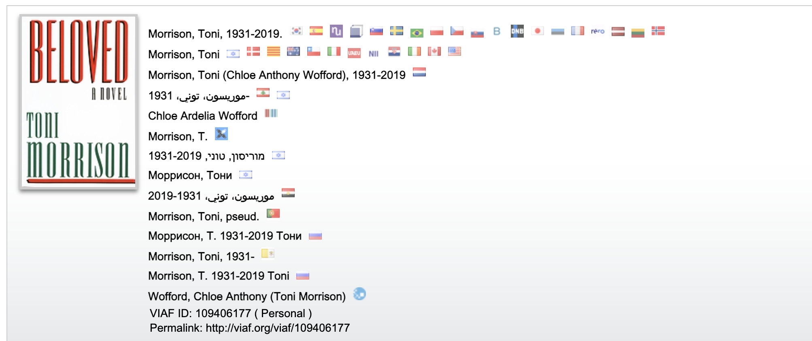
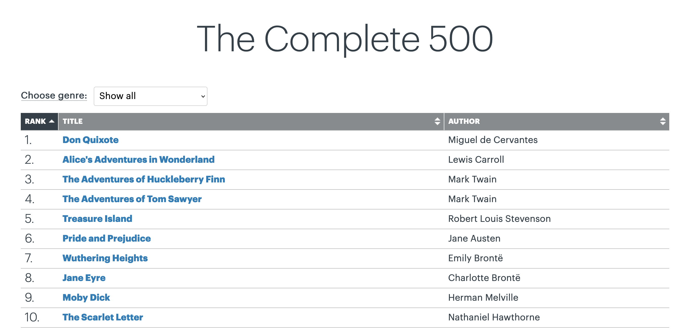

This dataset contains information on the top 500 novels most widely held in libraries, according to OCLC, a global library organization with over 16,000 member libraries in over 100 countries. The dataset includes information on authors’ biographies, library holdings, and online engagement for each novel, as well as the full text for all works that are not currently under copyright (190 novels).
Code
/*Inputs.table(search, data)*/Inputs.table(search, {layout:"fixed",rows:50,sort:"top_500_rank",reverse:false,format: {/*RecreationVisits: x => d3.format('.2s')(x),*/pub_year: x => d3.timeFormat(x),author_birth: x => d3.timeFormat(x),author_death: x => d3.timeFormat(x),gr_num_ratings_rank: x =>html`<div style='background:${color(x)}'>${d3.format('.2s')(x)}</div>` }})
This dataset is based on a list of the Top 500 Novels compiled by OCLC from information in their online database WorldCat, the largest database of library records. The first section of the list was published online with great fanfare as the Library Top 100 in 2019, accompanied by the claim that for novels, “literary greatness can be measured by how many libraries have a copy on their shelves.”
We wondered about the implications of this claim and more broadly about what it means to base ideas of “literary greatness” on the number of libraries that hold a particular work. How do historical biases in systems of literary production, preservation, and circulation figure into these kinds of claims? And how do we even define what counts as a novel?
The dataset was created by Anna Preus and Aashna Sheth, who are also the authors of this data essay.
HISTORY
To start, what is a novel? Today, novels are so prevalent that the term is often applied to a much wider range of books than it actually describes. “Novel” is an umbrella term for works of longform fiction in a range of genres: romance, sci-fi, historical fiction, horror, detective fiction, westerns, etc. The term generally does not apply–although these distinctions can sometimes be fuzzy–to short fiction, poetry, plays, biographies, or other non-fiction forms. The word “novel” was first used to describe a “long fictional prose narrative” in the 1600s, and the form increased in popularity across the eighteenth and nineteenth centuries. Interestingly, OCLC’s list of top 500 novels extends much further back than this. The oldest work on the list is The Tale of Genji, a classic work of Japanese literature written over 1,000 years ago.
A key issue in literary studies is which books from the past we continue to read in the present, and which books from the present we will continue to read in the future. The vast majority of novels fall out of circulation shortly after they are published, quickly becoming part of what Margaret Cohen has called “the great unread.” When teachers assign texts in their classes and when literary scholars conduct research, they’re making choices about which texts continue to be valuable and important for people to read and study.
The term “canon” in literary studies refers to texts that continue to be considered important over time. Ankhi Mukherjee defines the canon as “a set of texts whose value and readability have borne the test of time” noting that this “ involves not merely a work’s admission into an elite club, but its induction into ongoing critical dialogue and contestations of literary value.” Canonical works continue to be read, taught, and discussed, and in popular terminology they’re often considered “classics.” These are works you might read in a high school English class: F. Scott Fitzgerald’s The Great Gatsby, for example, or Harper Lee’s To Kill a Mockingbird.
One of the things that defines a classic is the fact that it stays in print for a long period of time. When a book is published, it is issued in an edition with a specific number of physical copies. If the book is profitable, it may be re-issued in different editions over many years, and edited repeatedly by different scholars across time. If it becomes a classic, it is likely to be issued in dozens or hundreds of editions even long after the author’s death.
In addition to classics, libraries are invested in making popular new novels available to readers. The Top 500 list includes many recently published best-sellers, including books in the Harry Potter, Twilight, and Hunger Games series. Some highly popular books go on to become classics–Charles Dickens’s Great Expectations, which was wildly successful in its day, is a good example. Many popular texts, though, do not become canonical.
By focusing on the books that librarians around the world have chosen to continue to make available to readers, OCLC was able to create a list of widely read novels that includes both classic works and more recent, popular works that may not have received the same levels of literary acclaim. We wondered, though, how did OCLC’s data compare to other potential indicators of popularity or canonicity? And, for that matter, how was the list actually constructed?
WHERE DID THE DATA COME FROM? WHO COLLECTED IT?
The initial list of Top 500 novels was collected by a team at OCLC, the non-profit organization that manages WorldCat. It was compiled based on analysis of data in WorldCat, which consists of catalog records created by librarians around the world, and entered into WorldCat.
Building on this list, we compiled data from a number of other databases, including Project Gutenberg, VIAF, and Wikipedia–a process that is described in greater detail below.
WHY WAS THE DATA COLLECTED? HOW IS THE DATA USED?
OCLC’s goal in producing the Top 500 list seems to be to encourage library patronage and reading. The website for the list includes a “Librarians Kit” with a variety of publicity materials–from printable bookmarks to Instagram tiles-that can help bring attention to books in the Top 500 list within libraries’ collections.
alt_text
Our goal was to collect additional data to understand better how the list was constructed, and to contextualize and nuance its claims about literary greatness.
WHAT’S IN THE DATA? WHAT MAKES A BOOK A “TOP NOVEL”?
The Top 500 list represents a massive data extraction and analysis effort on the part of OCLC. While they do not provide detailed information on how the list was compiled, they do offer a brief explanation of the process that went into creating the list on their FAQ page (written in the context of the top 100, but also applies to the top 500):
Materials in libraries are described and tracked in WorldCat in two ways. Any specific work of literature, music, art, history, etc., has an associated catalog record. This describes the item in a general sense. Every copy of the same book, for example, shares the same record. WorldCat also tracks library holdings, which indicate that a specific library has (or holds) at least one copy of that item.
The Library 100 is based on the total number of holdings for a specific novel across all libraries that have registered that information in WorldCat. When a library tells OCLC, “We have a copy of that book available,” that counts as a holding, and in the case of The Library 100, counts as +1 toward its ranking on the list.
This process initially sounds straightforward: to create the Top 500 list, the OCLC team presumably searched the title of a work, counted the number of libraries that held each title, and published the first 500. But it turns out it’s actually much more complicated than that. In WorldCat, records are stored by edition, meaning that each edition of a particular title has its own catalog record. An individual title like, say, Miguel de Cervantes’s Don Quixote, may have been released in hundreds or thousands of editions since its initial publication.
This means that when developing the list, the OCLC team actually had to find all the editions of a specific title and sum the number of libraries that hold that edition across all editions. Thus the top 500 list is not only a representation of how many libraries carry the work, but a representation of how many times a book has been re-edited and re-issued; the more editions a book has, the more records are created and the more copies of a book a library may hold. Often, there are duplicate records for individual editions, which may affect the overall count of copies tallied by the OCLC. And when a work is translated into different languages, all the editions of all the translations are also recorded in WorldCat, which also figures into the count of total holdings for each novel.
HOW WAS THE DATA COLLECTED? WHAT ADDITIONAL DATA WAS ADDED?
We wanted to contextualize the Library Top 500 list by compiling additional information on each novel from a range of other sources. We focused on gathering three main categories of information: information that could help us understand what types of works–and whose works–were included on the list, data that could potentially provide alternate measures of popularity or canonicity, and the full text of each novel that was in the public domain. We collected information from the following sources:
WorldCat: we used the now-shuttered OCLC tool Classify to gather data from WorldCat on the top 100 most widely held editions of each of the 500 novels on the list. We recorded total library holdings for these top 100 editions. We consider number of editions as a potential alternate measure of canonicity, although it is necessarily affected by the amount of time that has passed since the initial publication of the novel.
VIAF: The Virtual International Authority File is an OCLC-run database that contains structured records–called “name authority files”–for individual authors and creators. We used VIAF to gather information on authors whose novels were included on the list, including their birth and death dates, nationalities, genders, and occupations.

alt_text
Wikipedia: we used Wikipedia, the popular, free, volunteer-authored encyclopedia, to identify the year of first publication for each novel on the list.
Goodreads: Goodreads, which is owned by Amazon, is the largest social networking site related to books, with over 150 million members. Itt allows users to rate, review, and discuss a huge range of texts. We drew on data from Goodreads as a potential alternate indicator of texts’ popularity, collecting total number of reviews, total number of ratings, and average overall rating for each novel on the list.
Project Gutenberg: We used Project Gutenberg to access the full-text of all novels on the list that are currently in the public domain, or in other words, out of copyright. We chose Project Gutenberg because their eBooks are edited by volunteers, whereas many larger content repositories, like Internet Archive and HathiTrust, only make available machine-generated transcriptions of historical texts, which tend to be less accurate.
Our work creating this dataset not only builds on the work of the OCLC team who compiled the Top 500 list, but on the labor of the thousands of librarians who created records held in WorldCat and VIAF, of the volunteers who transcribed texts for Project Gutenberg and wrote articles for Wikipedia, and of the social media users who reviewed and rated books on Goodreads.
ACKNOWLEDGING BIAS
The Top 500 List provides an unprecedented opportunity to consider what works libraries around the world have on their shelves. This, in turn, serves as an important indicator of books’ continued relevance to readers. As OCLC points out, “libraries offer access to trendy and popular books. But, they don’t keep them on the shelf if they’re not repeatedly requested by their communities over the years.”
At the same time, there are biases in what gets kept on library shelves, and in which library shelves are being considered. The libraries that OCLC works with are disproportionately located in Europe and North America and OCLC uses cataloging systems developed in English-language contexts. The list is distinctly skewed toward works by White, European and American men, as is much of the history of English literary production, but it is also difficult to tease apart this historical bias from potential compounding biases in the underlying data, in the data collection process, or in library cataloging systems more broadly.
OCLC acknowledges broad biases in the list in a section titled, “Why isn’t the list more diverse?” writing, “The list emphasizes many books that we tend to think of as ‘classics,’ because those are the novels most often translated, retold in different editions, taught and widely distributed in library collections. Because of this, the list tends to reflect more dominant cultural views.” Although OCLC acknowledges this general bias towards works considered classics, more specific forms of bias aren’t made apparent in the list itself, which only includes the title and author for each novel.

alt_text
Each of these works and authors, of course, deserves careful consideration in their own right, but by compiling additional information into dataset, we can begin to see some of these biases as well as trends across the list more clearly.
WHAT’S IN THE DATA? WHAT MAKES A BOOK A “TOP NOVEL”?
By building on OCLC’s initial list and adding a range of information from other databases, we wanted to create a dataset that would offer opportunities to connect metadata analysis and full-text analysis in relation to a historically significant corpus of texts. To this end, we’ve included a brief exploration of the data below, as well as suggested activities, and some ideas for future areas of inquiry.
We split up our analysis into three portions: metadata analysis, rank analysis, and full-text analysis. You can follow our analysis in the notebook here. We first ask questions about the authors represented in the current top 500 list. Then, we compare rankings based on editions, holdings, and GoodReads popularity with the top 500 list. In another notebook, we analyze the full text of works split up by genre.
METADATA ANALYSIS
Let’s start by reading our data into a pandas dataframe. A pandas dataframe is a structure used to hold file data. This structure has efficient methods used for manipulating and visualizing data.
Code
import matplotlib.pyplot as pltimport pandas as pddf = pd.read_csv("https://raw.githubusercontent.com/melaniewalsh/responsible-datasets-in-context/main/datasets/top-500-novels/library_top_500.csv", sep=',', header=0, low_memory=False)
Now, we can answer various questions using this structure, which we’ve named df.
For example, let’s look at counts related to author gender and name.
Code
df["author_gender"].value_counts()
author_gender
male 354
female 145
Name: count, dtype: int64
We see that about 70% of authors on the list are male and 30% are female.
Code
df["author"].value_counts().head(10)
author
John Grisham 19
Charles Dickens 15
John Steinbeck 8
C.S. Lewis 8
J.K. Rowling 7
Nicholas Sparks 7
Stephen King 7
Laura Ingalls Wilder 7
Beverly Cleary 5
Thomas Hardy 5
Name: count, dtype: int64
Above are the top 10 authors and the number of times they appear. John Grisham appears a stunning 19 times!
Next, we can delve into some visualization work to understand where authors are from and what timeframe of publication is most represented in the top 500 list.
We can see that most books on the list were published between 1950 and 2000. Let’s take a look at information about the oldest and newest books on the list.
Code
from IPython.display import displayprint("Oldest Book(s):")display(df[df["pub_year"]==df["pub_year"].min()])print("Newest Book(s):")display(df[df["pub_year"]==df["pub_year"].max()])
Oldest Book(s):
Newest Book(s):
top_500_rank
title
author
pub_year
orig_lang
genre
author_birth
author_death
author_gender
author_primary_lang
...
gr_num_ratings
gr_num_reviews
gr_avg_rating_rank
gr_num_ratings_rank
oclc_owi
author_viaf
gr_url
wiki_url
pg_eng_url
pg_orig_url
137
138
The Tale of Genji
Murasaki Shikibu
1021
Japanese
na
978?
1016?
female
jpn
...
13,275
1,385
430
477
4.739790e+09
95154208
https://www.goodreads.com/book/show/7042.The_T...
https://en.wikipedia.org/wiki/The_Tale_of_Genji
https://www.gutenberg.org/cache/epub/66057/pg6...
unavailable
1 rows × 29 columns
top_500_rank
title
author
pub_year
orig_lang
genre
author_birth
author_death
author_gender
author_primary_lang
...
gr_num_ratings
gr_num_reviews
gr_avg_rating_rank
gr_num_ratings_rank
oclc_owi
author_viaf
gr_url
wiki_url
pg_eng_url
pg_orig_url
401
402
The Girl on the Train
Paula Hawkins
2015
English
na
1972
ALIVE
female
eng
...
2,924,281
126,289
275
26
1.893823e+09
14277202
https://www.goodreads.com/book/show/22557272-t...
https://en.wikipedia.org/wiki/The_Girl_on_the_...
NA_not-pub-domain
NaN
480
481
Go Set a Watchman
Harper Lee
2015
English
na
1926
2016
female
eng
...
272,837
32,622
498
209
2.283979e+09
12431460
NaN
https://en.wikipedia.org/wiki/Go_Set_a_Watchman
NA_not-pub-domain
NaN
2 rows × 29 columns
Let’s take a look at where the authors are from!
Code
df["author_nationality"].value_counts().head(5)
author_nationality
US 257
GB 148
FR 27
DE 10
RU 10
Name: count, dtype: int64
Finally, let’s unpack the differences between the GoodReads ratings and the top 500 ratings. First, we should think about how we want to compare the two lists. Given that we have listed rankings by average rating and number of ratings, which metric would be better to use? Would we want to create another metric?
For our purposes, we decided to use number of ratings, instead of average rating, as OCLC measures popularity by number of holdings, not how much patrons say they enjoy reading the books.
title author top_500_rank \
0 Don Quixote Miguel de Cervantes 1
1 Alice's Adventures in Wonderland Lewis Carroll 2
2 The Adventures of Huckleberry Finn Mark Twain 3
3 The Adventures of Tom Sawyer Mark Twain 4
4 Treasure Island Robert Louis Stevenson 5
gr_num_ratings_rank
0 211
1 133
2 68
3 88
4 145
title author top_500_rank \
44 Harry Potter and the Sorcerer's Stone J.K. Rowling 45
172 The Hunger Games Suzanne Collins 173
131 Twilight Stephenie Meyer 132
28 To Kill a Mockingbird Harper Lee 29
33 The Great Gatsby F. Scott Fitzgerald 34
gr_num_ratings_rank
44 1
172 2
131 3
28 4
33 5
Above you can see that the GoodReads rankings and the top 500 rankings aren’t very aligned! What factors affect popularity on GoodReads compared to OCLC?
▼ -210 Don Quixote
▼ -131 Alice's Adventures in Wonderland
▼ -65 The Adventures of Huckleberry Finn
▼ -84 The Adventures of Tom Sawyer
▼ -140 Treasure Island
▼ -2 Pride and Prejudice
▼ -39 Wuthering Heights
▼ -32 Jane Eyre
▼ -125 Moby Dick
▼ -85 The Scarlet Letter
▼ -197 Gulliver's Travels
▼ -266 The Pilgrim's Progress
▼ -85 A Christmas Carol
▼ -214 David Copperfield
▼ -71 A Tale of Two Cities
▼ -22 Little Women
▼ -86 Great Expectations
▲ +8 The Hobbit, or, There and Back Again
▼ -35 Frankenstein, or, the Modern Prometheus
▼ -149 Oliver Twist
▼ -209 Uncle Tom's Cabin
▼ -72 Crime and Punishment
▼ -159 Madame Bovary: Patterns of Provincial life
▼ -69 The Return of the King
▼ -42 Dracula
▼ -160 The Three Musketeers
▼ -16 Brave New World
▼ -155 War and Peace
▲ +25 To Kill a Mockingbird
▼ -122 The Wizard of Oz
▼ -73 Les Misérables
▼ -43 The Secret Garden
▲ +21 Animal Farm
▲ +29 The Great Gatsby
▼ -4 The Little Prince
▼ -124 The Call of the Wild
▼ -444 20,000 Leagues Under the Sea
▼ -59 Anna Karenina
▼ -193 The Wind in the Willows
▼ -17 The Picture of Dorian Gray
▼ -50 The Grapes of Wrath
▼ -32 Sense and Sensibility
▼ -279 The Last of the Mohicans
▼ -159 Tess of the d'Urbervilles
▲ +44 Harry Potter and the Sorcerer's Stone
▼ -193 Heidi
▼ -242 Ulysses
▼ -192 The Complete Sherlock Holmes
▼ -41 The Count of Monte Cristo
▼ -27 The Old Man and the Sea
▲ +22 The Lion, the Witch, and the Wardrobe
▼ -184 The Hunchback of Notre Dame
▼ -293 Pinocchio
▼ -28 One Hundred Years of Solitude
▼ -274 Ivanhoe
▼ -259 The Red Badge of Courage
▼ -24 Anne of Green Gables
▼ -146 Black Beauty
▼ -120 Peter Pan
▼ -127 A Farewell to Arms
▼ -349 The House of the Seven Gables
▲ +35 Lord of the Flies
▼ -233 The Prince and the Pauper
▼ -209 A Portrait of the Artist as a Young Man
▼ -367 Lord Jim
▲ +55 Harry Potter and the Chamber of Secrets
▼ -287 The Red & the Black
▼ -11 The Stranger
▼ -116 The Trial
▼ -224 Lady Chatterley's Lover
▼ -298 Kidnapped: The Adventures of David Balfour
▲ +56 The Catcher in the Rye
▲ +38 Fahrenheit 451
▼ -164 A Journey to the Center of the Earth
▼ -213 Vanity Fair
▼ -75 All Quiet on the Western Front
▲ +6 Gone with the Wind
▼ -201 My Ántonia
▲ +47 Of Mice and Men
▼ -405 The Vicar of Wakefield
▼ -235 A Connecticut Yankee in King Arthur's Court
▼ -164 White Fang
▼ -255 Fathers and Sons
▼ -242 Doctor Zhivago
▼ -324 The Decameron
▲ +79 Nineteen Eighty-Four
▼ -187 The Jungle
▲ +51 The Da Vinci Code
▼ -26 Persuasion
▼ -88 Mansfield Park
▼ -114 Candide
▼ -107 For Whom the Bell Tolls
▼ -178 Far from the Madding Crowd
▲ +66 The Fellowship of the Ring
▼ -319 The Return of the Native
▼ -294 Sons and Lovers
▲ +52 Charlotte's Web
▼ -214 The Swiss Family Robinson
▼ -210 Bleak House
▼ -278 Père Goriot
▼ -252 Utopia
▼ -327 The History of Tom Jones, a Foundling
▲ +94 Harry Potter and the Prisoner of Azkaban
▼ -314 Kim
▼ -150 The Sound and the Fury
▲ +92 Harry Potter and the Goblet of Fire
▼ -278 The Mill on the Floss
▲ +36 A Wrinkle in Time
▼ -72 The Hound of the Baskervilles
▲ +27 The Two Towers
▼ -78 The War of the Worlds
▼ -152 Middlemarch
▼ -146 The Age of Innocence
▼ -6 The Color Purple
▼ -50 Northanger Abbey
▼ -24 East of Eden
▼ -45 On the Road
▲ +19 Catch-22
▼ -105 Around the World in Eighty Days
▼ -244 Hard Times
▼ -37 Beloved
▼ -71 Mrs. Dalloway
▼ -131 To the Lighthouse
▼ -14 The Magician's Nephew
▲ +108 Harry Potter and the Order of the Phoenix
▼ -29 The Sun Also Rises
▼ -96 The Good Earth
▼ -212 Silas Marner
▼ -15 Love in the Time of Cholera
▲ +5 Rebecca
▼ -230 Jude the Obscure
▲ +129 Twilight
▼ -215 A Passage to India
▼ -84 The Plague
▼ -266 Nicholas Nickleby
▼ -93 The Pearl
▼ -155 Ethan Frome
▼ -339 The Tale of Genji
▲ +105 The Giver
▲ +116 The Alchemist
▼ -146 The Strange Case of Dr. Jekyll and Mr. Hyde
▼ -52 Robinson Crusoe
▼ -138 Tender is the Night
▼ -112 The Idiot
▼ -22 Hatchet
▲ +124 The Kite Runner
▲ +36 One Flew Over the Cuckoo's Nest
▼ -199 The Portrait of a Lady
▲ +84 The Outsiders
▼ -272 Ben-Hur
▼ -222 The Mayor of Casterbridge
▼ -204 Cry, The Beloved Country
▼ -53 The Last Battle
▼ -308 Captains Courageous
▼ -219 The Castle
▲ +76 The Metamorphosis
▼ -237 The Magic Mountain (Der Zauberberg)
▲ +10 James and the Giant Peach
▼ -18 The Horse and His Boy
▲ +140 Angels & Demons
▲ +12 The Voyage of the Dawn Treader
▲ +77 The Bell Jar
▼ -268 Women in Love
▼ -279 The Yearling
▼ -223 O Pioneers!
▲ +125 The Handmaid's Tale
▼ -165 The Moonstone
▼ -292 The Old Curiosity Shop
▼ -229 Little Dorrit
▲ +14 Prince Caspian: The Return to Narnia
▼ -237 Sister Carrie
▼ -26 The Silver Chair
▲ +171 The Hunger Games
▼ -183 This Side of Paradise
▼ -282 Eugénie Grandet
▼ -206 Of Human Bondage
▼ -320 Dream of the Red Chamber
▲ +127 Life of Pi
▲ +166 Harry Potter and the Deathly Hallows
▼ -68 Invisible Man
▼ -70 Steppenwolf
▼ -104 The Sorrows of Young Werther
▲ +46 Bridge to Terabithia
▼ -60 The Invisible Man
▲ +112 Holes
▲ +81 Siddhartha
▲ +37 A Tree Grows in Brooklyn
▼ -94 Through the Looking-Glass, and What Alice Found There
▲ +66 In Cold Blood
▼ -25 The House of the Spirits
▼ -259 Adam Bede
▼ -280 The Betrothed
▲ +162 The Book Thief
▲ +14 Their Eyes Were Watching God
▼ -106 One Day in the Life of Ivan Denisovich
▼ -239 The Sea Wolf
▲ +182 Catching Fire
▼ -97 Roll of Thunder, Hear My Cry
▼ -220 Death Comes for the Archbishop
▼ -123 The House of Mirth
▼ -174 Light in August
▼ -237 The Pickwick Papers
▼ -292 Remembrance of Things Past
▼ -295 Barchester Towers and the Warden
▼ -219 The Bridge of San Luis Rey
▲ +176 The Help
▲ +80 Murder on the Orient Express
▲ +172 The Lovely Bones
▼ -171 The Appeal
▼ -261 Dombey And Son
▲ +149 Slaughterhouse-Five
▼ -209 An American Tragedy
▼ -9 The Bluest Eye
▲ +1 Little House In the Big Woods
▼ -22 Pippi Longstocking
▼ -201 Germinal
▼ -89 The Heart Is a Lonely Hunter
▼ -52 The Woman In White
▼ -183 Absalom, Absalom!
▼ -111 A Painted House
▲ +200 The Girl With the Dragon Tattoo
▼ -31 A Room With a View
▲ +76 Watership Down
▲ +182 Memoirs of a Geisha
▼ -215 Our Mutual Friend
▼ -229 Babbitt
▼ -159 The Red Pony
▼ -143 All the King's Men
▲ +59 Things Fall Apart
▼ -240 Lorna Doone
▼ -164 Johnny Tremain
▼ -10 Anne of Avonlea
▲ +26 Tuck Everlasting
▲ +88 The BFG
▼ -45 Cannery Row
▲ +117 The Joy Luck Club
▲ +37 The Silmarillion
▼ -30 Roots
▲ +38 Little House on the Prairie
▼ -80 Native Son
▼ -52 Stuart Little
▼ -181 Cross Fire
▼ -169 The Power and the Glory
▲ +130 A Clockwork Orange
▲ +19 The Phantom of the Opera
▲ +27 The Martian Chronicles
▲ +155 The Road
▼ -239 The Way of All Flesh
▼ -251 Diary of a Wimpy Kid: The Long Haul
▼ -108 Villette
▲ +191 The Curious Incident of the Dog In the Night-Time
▼ -135 The Mysterious Island
▼ -50 Song of Solomon
▼ -198 Nana
▼ -160 Quo Vadis
▼ -192 Main Street
▲ +170 Matilda
▲ +162 Lolita
▲ +196 Paper Towns
▼ -176 Sounder
▲ +34 Are You There God? It's Me, Margaret
▲ +212 The Notebook
▲ +29 From the Mixed-Up Files of Mrs. Basil E. Frankweiler
▲ +96 Atlas Shrugged
▲ +81 The Fountainhead
▲ +134 Number the Stars
▲ +141 The Firm
▼ -108 Swann's Way
▲ +208 Ender's Game
▲ +98 The Name of the Rose
▲ +169 A Time to Kill
▲ +220 Water for Elephants
▲ +131 The Time Machine
▲ +226 Eragon
▲ +231 The Hitchhiker's Guide to the Galaxy
▼ -161 Buddenbrooks
▲ +221 A Thousand Splendid Suns
▲ +6 The Witch of Blackbird Pond
▲ +215 And Then There Were None
▲ +49 A Separate Peace
▲ +232 Breaking Dawn
▲ +20 As I Lay Dying
▲ +194 The Girl Who Played With Fire
▲ +121 Where the Red Fern Grows
▼ -131 Le Morte D'Arthur
▲ +267 Mockingjay
▲ +181 The Pillars of the Earth
▼ -202 Persian Letters
▲ +136 The Client
▼ -34 Sula
▲ +15 Tales of a Fourth Grade Nothing
▼ -78 The Merry Adventures of Robin Hood of Great Renown In Nottinghamshire
▼ -91 Tortilla Flat
▼ -179 Look Homeward, Angel
▼ -185 The Mystery of Edwin Drood
▼ -6 Brideshead Revisited
▲ +138 The Pelican Brief
▲ +157 Atonement
▼ -157 Washington Square
▲ +129 Like Water for Chocolate
▲ +246 The Golden Compass
▲ +236 The Secret Life of Bees
▲ +297 The Fault In Our Stars
▼ -164 Nostromo
▼ -173 Finnegans Wake
▼ -22 The Brethren
▲ +189 Coraline
▲ +165 Heart of Darkness
▼ -8 On the Banks of Plum Creek
▼ -115 Rebecca of Sunnybrook Farm
▼ -168 The Ambassadors
▼ -146 The Secret Agent
▲ +66 The House on Mango Street
▼ -51 Go Tell It on the Mountain
▲ +18 The Testament
▲ +102 The Clan of the Cave Bear
▼ -87 Cranford
▲ +98 Because of Winn-Dixie
▼ -33 My Side of the Mountain
▲ +125 The Runaway Jury
▼ -23 The Mouse and the Motorcycle
▲ +193 The Lost Symbol
▼ -141 The Forsyte Saga
▲ +301 Gone Girl
▲ +300 The Lightning Thief
▼ -170 The Last Days of Pompeii
▲ +92 The Reader
▼ -63 Caddie Woodlawn
▲ +88 The Tale of Despereaux
▲ +220 The Girl Who Kicked the Hornet's Nest
▼ -76 Dear Mr. Henshaw
▼ -10 The Killer Angels
▲ +88 Chronicle of a Death Foretold
▲ +222 The Five People You Meet In Heaven
▲ +160 The Master and Margarita
▼ -90 Winesburg, Ohio
▼ -107 P Is for Peril
▲ +268 My Sister's Keeper
▼ -143 Barnaby Rudge
▲ +4 Howards End
▲ +14 The Broker
▲ +8 The Camel Club
▼ -120 The Rainbow
▼ -23 The Man In the Iron Mask
▲ +62 Mary Poppins
▲ +210 Artemis Fowl
▲ +216 Dear John
▲ +123 Cold Mountain
▲ +228 Flowers for Algernon
▼ -31 The Dark Is Rising
▼ -102 Resurrection
▲ +22 Fearless Fourteen
▼ -139 A Sentimental Journey Through France and Italy
▲ +11 The King of Torts
▲ +216 The Graveyard Book
▼ -16 The Quiet American
▲ +82 The Chamber
▲ +74 The English Patient
▲ +110 Snow Falling on Cedars
▲ +21 The Long Winter
▲ +20 Sarah, Plain and Tall
▼ -44 Cross Country
▲ +56 The Spy Who Came In from the Cold
▲ +331 A Game of Thrones
▲ +189 The Thorn Birds
▲ +45 Old Yeller
▲ +7 Ramona Quimby, Age 8
▼ -15 Death In Venice
▲ +19 By the Shores of Silver Lake
▲ +235 Inferno
▲ +104 Schindler's List
▲ +151 Jonathan Livingston Seagull
▲ +266 The Stand
▲ +55 The Last Juror
▲ +30 Shiloh
▲ +267 Girl With a Pearl Earring
▲ +167 The Murder of Roger Ackroyd
▲ +300 It
▲ +136 The Rainmaker
▲ +272 The Poisonwood Bible
▲ +68 The Indian in the Cupboard
▲ +71 The Maltese Falcon
▼ -84 The Warden
▲ +35 The Summons
▼ -26 Encyclopedia Brown: Boy Detective
▲ +339 The Time Traveler's Wife
▼ -5 The Incredible Journey
▲ +103 Daughter of Fortune
▼ -38 Shirley
▲ +85 Bud, Not Buddy
▲ +12 The Horse Whisperer
▲ +93 The Street Lawyer
▲ +95 Nausea
▼ -36 To Have and Have Not
▲ +70 The Bridges of Madison County
▲ +136 Anne of the Island
● 0 The Winter of Our Discontent
▲ +339 The Shining
▲ +99 The Tenant of Wildfell Hall
▼ -3 First Family
▲ +111 The Partner
▲ +376 The Girl on the Train
▼ -62 The Black Arrow: A Tale of the Two Roses
▼ -90 The Rise of Silas Lapham
▲ +153 The Choice
▼ -82 The Virginian: A Horseman of the Plains
▲ +307 A Walk to Remember
▲ +350 The Maze Runner
▲ +176 The Westing Game
▲ +11 Misty of Chincoteague
▲ +142 Diary of a Wimpy Kid: The Last Straw
▲ +19 King Solomon's Mines
▼ -56 The Princess of Cleves
▼ -14 Jacob Have I Loved
▲ +158 Mrs. Frisby and the Rats of NIMH
▲ +300 Misery
▲ +167 The Cider House Rules
▼ -28 King of the Wind
▲ +109 The Once and Future King
▲ +254 The Witches
▲ +264 The Subtle Knife
▲ +118 When You Reach Me
▲ +310 Carrie
▼ -30 The Moon and Sixpence
▼ -51 The Higher Power of Lucky
▼ -65 Looking Backward, 2000-1887
▼ -39 The Wings of the Dove
▼ -55 The Summer of the Swans
▲ +40 Dangerous Liaisons
▲ +346 Jurassic Park
▲ +219 The Absolutely True Diary of a Part-time Indian
▲ +19 The Grey King
▲ +13 The Leopard
▲ +75 The Mammoth Hunters
▲ +84 The Trumpet of the Swan
▲ +263 The Lucky One
▲ +82 These Happy Golden Years
▼ -51 Arrowsmith
▲ +62 Julie of the Wolves
▲ +286 The Screwtape Letters
▲ +127 The Fall
▲ +226 The No. 1 Ladies' Detective Agency
▲ +5 Worst Case
▼ -15 Lost Horizon
▲ +317 The Gunslinger
▼ -38 The Slave Dancer
▲ +429 Harry Potter and the Half-Blood Prince
▲ +287 Inkheart
▲ +16 Ramona and her Father
▲ +159 Inkspell
▲ +85 Ramona the Pest
▲ +189 Walk Two Moons
▲ +384 Miss Peregrine's Home for Peculiar Children
▲ +54 The Chocolate War
▲ +120 Sophie's Choice
▲ +403 Looking for Alaska
▲ +240 Breakfast at Tiffany's
▲ +62 The Razor's Edge
▲ +201 Dreamcatcher
▲ +127 Orlando
▲ +270 The Things they Carried
▲ +125 Little Town on the Prairie
▲ +202 Nights in Rodanthe
▲ +290 The Amber Spyglass
▲ +157 The Miraculous Journey of Edward Tulane
▲ +103 Flatland
▲ +350 Diary of a Wimpy Kid
▲ +338 The Memory Keeper's Daughter
▲ +203 The Wedding
▲ +278 Fried Green Tomatoes at the Whistle-Stop Cafe
▲ +103 The Cricket in Times Square
▲ +270 The Phantom Tollbooth
▼ -13 Rob Roy
▲ +209 The Death of Ivan Ilych
▲ +34 Alex Cross's Trial
▼ -22 Kenilworth
▲ +16 The Life and Opinions of Tristram Shandy
▲ +282 The Remains of the Day
▼ -14 M.C. Higgins, The Great
▲ +5 Call It Courage
▲ +272 Go Set a Watchman
▲ +77 Bleachers
▲ +9 Elijah of Buxton
▲ +37 Swimsuit
▲ +321 Cat's Cradle
▲ +35 The Caine Mutiny
▲ +45 The Heart of the Matter
▲ +170 Harriet, the Spy
▲ +55 Darkness at Noon
▲ +302 A Prayer for Owen Meany
▲ +294 The God of Small Things
▲ +130 The Associate
▲ +369 The Shack
▲ +45 The Naked and the Dead
▲ +419 The Sea of Monsters
▲ +306 Stranger in a Strange Land
▲ +220 Vision in White
▲ +53 The Whipping Boy
▲ +398 Room
▲ +378 Deception Point
Let’s see which novels had the most movement up or down!
title author points_moved top_500_rank gr_num_ratings_rank
The Winter of Our Discontent John Steinbeck 0 397 397
Little House In the Big Woods Laura Ingalls Wilder 1 214 213
Pride and Prejudice Jane Austen 2 6 8
First Family David Baldacci 3 400 403
The Little Prince Antoine de Saint-Exupéry 4 35 39
Howards End E.M. Forster 4 340 336
Rebecca Daphne Du Maurier 5 130 125
Call It Courage Armstrong Sperry 5 480 475
The Incredible Journey Sheila Burnford 5 387 392
Worst Case James Patterson 5 443 438
title author points_moved top_500_rank gr_num_ratings_rank
20,000 Leagues Under the Sea Jules Verne 444 37 481
Harry Potter and the Half-Blood Prince J.K. Rowling 429 447 18
The Sea of Monsters Rick Riordan 419 495 76
The Vicar of Wakefield Oliver Goldsmith 405 80 485
Looking for Alaska John Green 403 456 53
Room Emma Donoghue 398 499 101
Miss Peregrine's Home for Peculiar Children Ransom Riggs 384 453 69
Deception Point Dan Brown 378 500 122
The Girl on the Train Paula Hawkins 376 402 26
The Shack William P. Young 369 493 124
Above we see that Steinbeck’s The Winter of Our Discontent, stayed at the same ranking of 397. Pride and Prejudice remained quite high as well.
20,000 Leagues Under the Sea dropped the most, from rank 37 in the top 500 list, to rank 481 in the goodreads list! Harry Potter and The Half-Blood Prince and The Sea of Monsters rose the most.
df[‘points_moved’].mean()
Code
df['points_moved'].mean()
137.016
Let’s take a look at some of these metrics for rankings based on number of editions and total holdings.
● 0 Don Quixote
▼ -31 Alice's Adventures in Wonderland
▼ -3 The Adventures of Huckleberry Finn
▼ -3 The Adventures of Tom Sawyer
▲ +3 Treasure Island
▲ +3 Pride and Prejudice
▼ -4 Wuthering Heights
▲ +3 Jane Eyre
▼ -10 Moby Dick
▼ -17 The Scarlet Letter
▼ -24 Gulliver's Travels
▼ -9 The Pilgrim's Progress
▲ +5 A Christmas Carol
▼ -2 David Copperfield
▼ -2 A Tale of Two Cities
▼ -9 Little Women
▼ -1 Great Expectations
▼ -178 The Hobbit, or, There and Back Again
▼ -12 Frankenstein, or, the Modern Prometheus
▲ +11 Oliver Twist
▲ +1 Uncle Tom's Cabin
▼ -135 Crime and Punishment
▼ -95 Madame Bovary: Patterns of Provincial life
▼ -390 The Return of the King
▼ -13 Dracula
▲ +16 The Three Musketeers
▼ -74 Brave New World
▼ -186 War and Peace
▼ -110 To Kill a Mockingbird
▼ -101 The Wizard of Oz
▲ +7 Les Misérables
▼ -36 The Secret Garden
▼ -7 Animal Farm
▼ -12 The Great Gatsby
▲ +13 The Little Prince
▼ -13 The Call of the Wild
▲ +8 20,000 Leagues Under the Sea
▲ +10 Anna Karenina
▼ -27 The Wind in the Willows
▲ +8 The Picture of Dorian Gray
▼ -50 The Grapes of Wrath
▼ -14 Sense and Sensibility
▼ -2 The Last of the Mohicans
▼ -9 Tess of the d'Urbervilles
▼ -109 Harry Potter and the Sorcerer's Stone
▲ +5 Heidi
▼ -10 Ulysses
▼ -332 The Complete Sherlock Holmes
▲ +5 The Count of Monte Cristo
▲ +3 The Old Man and the Sea
▼ -124 The Lion, the Witch, and the Wardrobe
▲ +26 The Hunchback of Notre Dame
▼ -227 Pinocchio
▼ -295 One Hundred Years of Solitude
▲ +43 Ivanhoe
▼ -81 The Red Badge of Courage
▼ -39 Anne of Green Gables
▼ -28 Black Beauty
▼ -132 Peter Pan
▼ -43 A Farewell to Arms
▼ -46 The House of the Seven Gables
▼ -57 Lord of the Flies
▼ -11 The Prince and the Pauper
▼ -26 A Portrait of the Artist as a Young Man
● 0 Lord Jim
▼ -106 Harry Potter and the Chamber of Secrets
▲ +7 The Stranger
▲ +33 The Trial
▼ -43 Lady Chatterley's Lover
▼ -423 Kidnapped: The Adventures of David Balfour
▼ -76 The Catcher in the Rye
▼ -63 Fahrenheit 451
▲ +20 A Journey to the Center of the Earth
▲ +16 Vanity Fair
▲ +5 All Quiet on the Western Front
▼ -87 Gone with the Wind
▼ -103 My Ántonia
▼ -13 Of Mice and Men
▲ +66 The Vicar of Wakefield
▲ +6 A Connecticut Yankee in King Arthur's Court
▲ +32 White Fang
▼ -43 Fathers and Sons
▼ -220 Doctor Zhivago
▲ +62 The Decameron
▼ -42 Nineteen Eighty-Four
▼ -79 The Jungle
▼ -111 The Da Vinci Code
▲ +85 Persuasion
▲ +27 Mansfield Park
▲ +43 Candide
▼ -16 For Whom the Bell Tolls
▼ -12 Far from the Madding Crowd
▼ -195 The Fellowship of the Ring
▼ -32 The Return of the Native
▼ -18 Sons and Lovers
▼ -141 Charlotte's Web
▲ +9 The Swiss Family Robinson
▲ +27 Bleak House
▲ +58 Père Goriot
▲ +32 Utopia
▲ +35 The History of Tom Jones, a Foundling
▼ -76 Harry Potter and the Prisoner of Azkaban
▲ +22 Kim
▼ -79 The Sound and the Fury
▼ -102 Harry Potter and the Goblet of Fire
▲ +34 The Mill on the Floss
▼ -161 A Wrinkle in Time
▲ +49 The Hound of the Baskervilles
▼ -228 The Two Towers
▲ +9 The War of the Worlds
▲ +15 Middlemarch
▼ -38 The Age of Innocence
▼ -122 The Color Purple
▲ +21 Northanger Abbey
▼ -90 East of Eden
▼ -77 On the Road
▼ -65 Catch-22
▲ +89 Around the World in Eighty Days
▲ +43 Hard Times
▼ -105 Beloved
● 0 Mrs. Dalloway
▼ -6 To the Lighthouse
▼ -110 The Magician's Nephew
▼ -94 Harry Potter and the Order of the Phoenix
▲ +22 The Sun Also Rises
▼ -80 The Good Earth
▲ +70 Silas Marner
▼ -81 Love in the Time of Cholera
▼ -8 Rebecca
▼ -12 Jude the Obscure
▼ -131 Twilight
▼ -25 A Passage to India
▲ +49 The Plague
▼ -36 Nicholas Nickleby
▲ +43 The Pearl
▼ -41 Ethan Frome
▲ +28 The Tale of Genji
▼ -142 The Giver
▼ -15 The Alchemist
▲ +60 The Strange Case of Dr. Jekyll and Mr. Hyde
▲ +33 Robinson Crusoe
▼ -34 Tender is the Night
▲ +23 The Idiot
▼ -201 Hatchet
▼ -111 The Kite Runner
▼ -77 One Flew Over the Cuckoo's Nest
▲ +15 The Portrait of a Lady
▼ -91 The Outsiders
▲ +80 Ben-Hur
▲ +9 The Mayor of Casterbridge
▼ -57 Cry, The Beloved Country
▼ -160 The Last Battle
▲ +9 Captains Courageous
▲ +75 The Castle
▲ +119 The Metamorphosis
▲ +93 The Magic Mountain (Der Zauberberg)
▼ -115 James and the Giant Peach
▼ -105 The Horse and His Boy
▼ -111 The Voyage of the Dawn Treader
▼ -60 The Bell Jar
▼ -4 Women in Love
▼ -103 The Yearling
▼ -79 O Pioneers!
▼ -50 The Handmaid's Tale
▲ +51 The Moonstone
▲ +69 The Old Curiosity Shop
▲ +71 Little Dorrit
▼ -197 Prince Caspian: The Return to Narnia
▼ -3 Sister Carrie
▼ -75 The Silver Chair
▼ -220 The Hunger Games
▼ -41 This Side of Paradise
▲ +132 Eugénie Grandet
▼ -13 Of Human Bondage
▲ +60 Dream of the Red Chamber
▼ -53 Life of Pi
▼ -98 Harry Potter and the Deathly Hallows
▼ -79 Invisible Man
▲ +97 Steppenwolf
▲ +167 The Sorrows of Young Werther
▼ -139 Bridge to Terabithia
▲ +73 The Invisible Man
▼ -138 Holes
▲ +110 Siddhartha
▼ -97 A Tree Grows in Brooklyn
▲ +154 Through the Looking-Glass, and What Alice Found There
▼ -111 In Cold Blood
▼ -2 The House of the Spirits
▲ +85 Adam Bede
▲ +153 The Betrothed
▼ -94 The Book Thief
▼ -114 Their Eyes Were Watching God
▼ -130 One Day in the Life of Ivan Denisovich
▲ +145 The Sea Wolf
▼ -197 Catching Fire
▼ -179 Roll of Thunder, Hear My Cry
▼ -67 Death Comes for the Archbishop
▼ -2 The House of Mirth
▼ -47 Light in August
▲ +70 The Pickwick Papers
▲ +59 Remembrance of Things Past
▼ -291 Barchester Towers and the Warden
▲ +8 The Bridge of San Luis Rey
▼ -108 The Help
▲ +42 Murder on the Orient Express
▼ -135 The Lovely Bones
▼ -176 The Appeal
▲ +115 Dombey And Son
▼ -173 Slaughterhouse-Five
▲ +9 An American Tragedy
▼ -57 The Bluest Eye
▼ -101 Little House In the Big Woods
▲ +29 Pippi Longstocking
▲ +133 Germinal
▼ -12 The Heart Is a Lonely Hunter
▲ +77 The Woman In White
▼ -67 Absalom, Absalom!
▼ -144 A Painted House
▼ -53 The Girl With the Dragon Tattoo
▲ +40 A Room With a View
▼ -73 Watership Down
▼ -29 Memoirs of a Geisha
▲ +101 Our Mutual Friend
▲ +56 Babbitt
▲ +77 The Red Pony
▼ -43 All the King's Men
▼ -1 Things Fall Apart
▲ +110 Lorna Doone
▼ -121 Johnny Tremain
▲ +12 Anne of Avonlea
▼ -138 Tuck Everlasting
▼ -120 The BFG
▼ -20 Cannery Row
▼ -97 The Joy Luck Club
▲ +39 The Silmarillion
▼ -127 Roots
▼ -77 Little House on the Prairie
▼ -42 Native Son
▼ -103 Stuart Little
▼ -242 Cross Fire
▲ +87 The Power and the Glory
▲ +39 A Clockwork Orange
▲ +76 The Phantom of the Opera
▲ +11 The Martian Chronicles
▼ -104 The Road
▲ +75 The Way of All Flesh
▼ -176 Diary of a Wimpy Kid: The Long Haul
▲ +110 Villette
▼ -37 The Curious Incident of the Dog In the Night-Time
▲ +197 The Mysterious Island
▼ -50 Song of Solomon
▲ +175 Nana
▲ +203 Quo Vadis
▲ +33 Main Street
▲ +53 Matilda
▼ -215 Lolita
▼ -133 Paper Towns
▼ -193 Sounder
▼ -130 Are You There God? It's Me, Margaret
▼ -37 The Notebook
▼ -127 From the Mixed-Up Files of Mrs. Basil E. Frankweiler
▼ -93 Atlas Shrugged
▼ -53 The Fountainhead
▼ -110 Number the Stars
▼ -1 The Firm
▲ +92 Swann's Way
▼ -92 Ender's Game
▲ +102 The Name of the Rose
▼ -58 A Time to Kill
▼ -102 Water for Elephants
▲ +161 The Time Machine
▼ -130 Eragon
▼ -30 The Hitchhiker's Guide to the Galaxy
▲ +115 Buddenbrooks
▼ -29 A Thousand Splendid Suns
▼ -125 The Witch of Blackbird Pond
▼ -38 And Then There Were None
▼ -89 A Separate Peace
▼ -98 Breaking Dawn
▲ +40 As I Lay Dying
▼ -52 The Girl Who Played With Fire
▼ -178 Where the Red Fern Grows
▲ +57 Le Morte D'Arthur
▼ -112 Mockingjay
▲ +37 The Pillars of the Earth
▲ +154 Persian Letters
▼ -22 The Client
▼ -4 Sula
▼ -136 Tales of a Fourth Grade Nothing
▲ +13 The Merry Adventures of Robin Hood of Great Renown In Nottinghamshire
▲ +37 Tortilla Flat
▲ +2 Look Homeward, Angel
▲ +180 The Mystery of Edwin Drood
▼ -5 Brideshead Revisited
▼ -1 The Pelican Brief
▼ -21 Atonement
▲ +119 Washington Square
▼ -191 Like Water for Chocolate
▼ -171 The Golden Compass
▼ -106 The Secret Life of Bees
▼ -28 The Fault In Our Stars
▲ +145 Nostromo
▲ +78 Finnegans Wake
▲ +4 The Brethren
▲ +12 Coraline
▲ +208 Heart of Darkness
▼ -104 On the Banks of Plum Creek
▼ -32 Rebecca of Sunnybrook Farm
▲ +111 The Ambassadors
▲ +177 The Secret Agent
▼ -94 The House on Mango Street
▲ +38 Go Tell It on the Mountain
▲ +25 The Testament
▼ -80 The Clan of the Cave Bear
▲ +187 Cranford
▼ -100 Because of Winn-Dixie
▼ -127 My Side of the Mountain
▼ -48 The Runaway Jury
▼ -121 The Mouse and the Motorcycle
▼ -31 The Lost Symbol
▲ +128 The Forsyte Saga
▼ -39 Gone Girl
▼ -33 The Lightning Thief
▲ +201 The Last Days of Pompeii
▲ +44 The Reader
▼ -78 Caddie Woodlawn
▼ -120 The Tale of Despereaux
▼ -10 The Girl Who Kicked the Hornet's Nest
▼ -109 Dear Mr. Henshaw
▼ -90 The Killer Angels
▲ +140 Chronicle of a Death Foretold
▼ -86 The Five People You Meet In Heaven
▲ +186 The Master and Margarita
▲ +93 Winesburg, Ohio
▼ -138 P Is for Peril
▼ -57 My Sister's Keeper
▲ +261 Barnaby Rudge
▲ +150 Howards End
▲ +4 The Broker
▼ -77 The Camel Club
▲ +131 The Rainbow
▲ +92 The Man In the Iron Mask
▲ +15 Mary Poppins
▲ +20 Artemis Fowl
▼ -50 Dear John
▼ -12 Cold Mountain
▼ -62 Flowers for Algernon
▼ -32 The Dark Is Rising
▲ +204 Resurrection
▼ -134 Fearless Fourteen
▲ +266 A Sentimental Journey Through France and Italy
▲ +15 The King of Torts
▼ -103 The Graveyard Book
▲ +145 The Quiet American
▲ +47 The Chamber
▲ +97 The English Patient
▼ -22 Snow Falling on Cedars
▼ -73 The Long Winter
▼ -84 Sarah, Plain and Tall
▼ -119 Cross Country
▲ +124 The Spy Who Came In from the Cold
▲ +28 A Game of Thrones
▲ +132 The Thorn Birds
▼ -66 Old Yeller
▼ -80 Ramona Quimby, Age 8
▲ +206 Death In Venice
▼ -54 By the Shores of Silver Lake
▲ +73 Inferno
▲ +86 Schindler's List
▼ -28 Jonathan Livingston Seagull
▼ -14 The Stand
▼ -47 The Last Juror
▼ -96 Shiloh
▲ +52 Girl With a Pearl Earring
▲ +152 The Murder of Roger Ackroyd
▲ +87 It
▲ +67 The Rainmaker
▼ -48 The Poisonwood Bible
▼ -28 The Indian in the Cupboard
▲ +136 The Maltese Falcon
▲ +196 The Warden
▲ +39 The Summons
▼ -85 Encyclopedia Brown: Boy Detective
▲ +31 The Time Traveler's Wife
▲ +78 The Incredible Journey
▲ +68 Daughter of Fortune
▲ +243 Shirley
▼ -89 Bud, Not Buddy
▲ +25 The Horse Whisperer
▲ +85 The Street Lawyer
▲ +230 Nausea
▲ +153 To Have and Have Not
▼ -7 The Bridges of Madison County
▲ +151 Anne of the Island
▲ +14 The Winter of Our Discontent
▲ +161 The Shining
▲ +214 The Tenant of Wildfell Hall
▼ -85 First Family
▲ +69 The Partner
▲ +68 The Girl on the Train
▲ +251 The Black Arrow: A Tale of the Two Roses
▼ -24 The Choice
▲ +113 The Virginian: A Horseman of the Plains
▼ -52 A Walk to Remember
▼ -35 The Maze Runner
▼ -56 The Westing Game
▼ -6 Misty of Chincoteague
▼ -41 Diary of a Wimpy Kid: The Last Straw
▲ +211 King Solomon's Mines
▼ -54 Jacob Have I Loved
▼ -24 Mrs. Frisby and the Rats of NIMH
▲ +156 Misery
▲ +42 The Cider House Rules
▼ -13 King of the Wind
▲ +63 The Once and Future King
▲ +92 The Witches
▲ +51 The Subtle Knife
▼ -61 When You Reach Me
▲ +161 Carrie
▲ +236 The Moon and Sixpence
▼ -67 The Higher Power of Lucky
▲ +213 Looking Backward, 2000-1887
▲ +178 The Wings of the Dove
▼ -50 The Summer of the Swans
▲ +151 Dangerous Liaisons
▲ +83 Jurassic Park
▼ -17 The Absolutely True Diary of a Part-time Indian
▼ -35 The Grey King
▲ +280 The Leopard
▲ +35 The Mammoth Hunters
▼ -26 The Trumpet of the Swan
▲ +19 The Lucky One
▲ +3 These Happy Golden Years
▲ +180 Arrowsmith
▼ -18 Julie of the Wolves
▲ +16 The Screwtape Letters
▲ +379 The Fall
▲ +12 The No. 1 Ladies' Detective Agency
▼ -44 Worst Case
▲ +169 Lost Horizon
▲ +59 The Gunslinger
▼ -18 The Slave Dancer
▼ -42 Harry Potter and the Half-Blood Prince
▲ +76 Inkheart
▼ -17 Ramona and her Father
▼ -6 Inkspell
▼ -4 Ramona the Pest
▲ +14 Walk Two Moons
▼ -35 Miss Peregrine's Home for Peculiar Children
▲ +42 The Chocolate War
▲ +114 Sophie's Choice
▲ +97 Looking for Alaska
▲ +236 Breakfast at Tiffany's
▲ +193 The Razor's Edge
▲ +9 Dreamcatcher
▲ +300 Orlando
▲ +20 The Things they Carried
▲ +25 Little Town on the Prairie
▲ +19 Nights in Rodanthe
▲ +102 The Amber Spyglass
▼ -12 The Miraculous Journey of Edward Tulane
▲ +234 Flatland
▼ -2 Diary of a Wimpy Kid
▲ +14 The Memory Keeper's Daughter
▲ +18 The Wedding
▲ +55 Fried Green Tomatoes at the Whistle-Stop Cafe
▲ +61 The Cricket in Times Square
▲ +84 The Phantom Tollbooth
▲ +350 Rob Roy
▲ +257 The Death of Ivan Ilych
▼ -15 Alex Cross's Trial
▲ +463 Kenilworth
▲ +389 The Life and Opinions of Tristram Shandy
▼ -1 M.C. Higgins, The Great
▲ +17 Call It Courage
▲ +21 Go Set a Watchman
▲ +81 Bleachers
▼ -10 Elijah of Buxton
▲ +2 Swimsuit
▲ +164 Cat's Cradle
▲ +159 The Caine Mutiny
▲ +236 The Heart of the Matter
▲ +52 Harriet, the Spy
▲ +271 Darkness at Noon
▲ +112 A Prayer for Owen Meany
▲ +143 The God of Small Things
▲ +87 The Associate
▲ +67 The Shack
▲ +240 The Naked and the Dead
▲ +60 The Sea of Monsters
▲ +146 Stranger in a Strange Land
▲ +23 Vision in White
▲ +22 The Whipping Boy
▲ +110 Room
▲ +127 Deception Point
title author top_500_rank \
0 Don Quixote Miguel de Cervantes 1
1 Alice's Adventures in Wonderland Lewis Carroll 2
2 The Adventures of Huckleberry Finn Mark Twain 3
3 The Adventures of Tom Sawyer Mark Twain 4
4 Treasure Island Robert Louis Stevenson 5
oclc_editions_rank
0 1.0
1 33.0
2 6.0
3 7.0
4 2.0
title author top_500_rank \
0 Don Quixote Miguel de Cervantes 1
4 Treasure Island Robert Louis Stevenson 5
5 Pride and Prejudice Jane Austen 6
88 Persuasion Jane Austen 89
7 Jane Eyre Charlotte Brontë 8
oclc_editions_rank
0 1.0
4 2.0
5 3.0
88 4.0
7 5.0
▼ -8 Don Quixote
▼ -16 Alice's Adventures in Wonderland
▼ -3 The Adventures of Huckleberry Finn
▼ -3 The Adventures of Tom Sawyer
▲ +4 Treasure Island
▲ +4 Pride and Prejudice
▲ +2 Wuthering Heights
▲ +4 Jane Eyre
▲ +1 Moby Dick
▼ -4 The Scarlet Letter
▼ -14 Gulliver's Travels
▼ -16 The Pilgrim's Progress
▼ -3 A Christmas Carol
▲ +3 David Copperfield
▲ +3 A Tale of Two Cities
▲ +6 Little Women
▲ +4 Great Expectations
▼ -17 The Hobbit, or, There and Back Again
▲ +4 Frankenstein, or, the Modern Prometheus
▲ +3 Oliver Twist
● 0 Uncle Tom's Cabin
▼ -43 Crime and Punishment
▼ -16 Madame Bovary: Patterns of Provincial life
▼ -438 The Return of the King
▼ -2 Dracula
▲ +6 The Three Musketeers
▼ -58 Brave New World
▼ -116 War and Peace
▲ +3 To Kill a Mockingbird
▼ -160 The Wizard of Oz
▲ +9 Les Misérables
▼ -27 The Secret Garden
▲ +4 Animal Farm
▲ +11 The Great Gatsby
▼ -32 The Little Prince
▼ -8 The Call of the Wild
▲ +1 20,000 Leagues Under the Sea
▲ +14 Anna Karenina
▼ -14 The Wind in the Willows
▼ -2 The Picture of Dorian Gray
▲ +9 The Grapes of Wrath
▼ -5 Sense and Sensibility
▼ -44 The Last of the Mohicans
▲ +6 Tess of the d'Urbervilles
▲ +15 Harry Potter and the Sorcerer's Stone
▼ -17 Heidi
▼ -2 Ulysses
▼ -424 The Complete Sherlock Holmes
▼ -7 The Count of Monte Cristo
▼ -2 The Old Man and the Sea
● 0 The Lion, the Witch, and the Wardrobe
▲ +21 The Hunchback of Notre Dame
▼ -416 Pinocchio
▼ -147 One Hundred Years of Solitude
▲ +15 Ivanhoe
▼ -30 The Red Badge of Courage
▲ +7 Anne of Green Gables
▼ -44 Black Beauty
▼ -97 Peter Pan
▲ +6 A Farewell to Arms
▼ -27 The House of the Seven Gables
▲ +4 Lord of the Flies
▼ -11 The Prince and the Pauper
▼ -7 A Portrait of the Artist as a Young Man
▼ -12 Lord Jim
▲ +23 Harry Potter and the Chamber of Secrets
▲ +8 The Stranger
● 0 The Trial
▼ -34 Lady Chatterley's Lover
▼ -423 Kidnapped: The Adventures of David Balfour
▼ -9 The Catcher in the Rye
▼ -10 Fahrenheit 451
▼ -24 A Journey to the Center of the Earth
▼ -4 Vanity Fair
▲ +10 All Quiet on the Western Front
▼ -24 Gone with the Wind
▼ -2 My Ántonia
▲ +46 Of Mice and Men
▲ +12 The Vicar of Wakefield
▲ +6 A Connecticut Yankee in King Arthur's Court
▲ +37 White Fang
▼ -29 Fathers and Sons
▼ -181 Doctor Zhivago
▲ +13 The Decameron
▲ +24 Nineteen Eighty-Four
▼ -16 The Jungle
▼ -12 The Da Vinci Code
▲ +86 Persuasion
▲ +8 Mansfield Park
▲ +43 Candide
▲ +3 For Whom the Bell Tolls
▼ -13 Far from the Madding Crowd
▼ -77 The Fellowship of the Ring
▼ -2 The Return of the Native
▼ -9 Sons and Lovers
▲ +2 Charlotte's Web
▼ -15 The Swiss Family Robinson
▲ +5 Bleak House
▲ +10 Père Goriot
▲ +8 Utopia
▲ +24 The History of Tom Jones, a Foundling
▲ +46 Harry Potter and the Prisoner of Azkaban
▼ -4 Kim
▼ -103 The Sound and the Fury
▲ +33 Harry Potter and the Goblet of Fire
● 0 The Mill on the Floss
▲ +44 A Wrinkle in Time
▼ -6 The Hound of the Baskervilles
▼ -115 The Two Towers
▼ -11 The War of the Worlds
▲ +3 Middlemarch
▼ -6 The Age of Innocence
● 0 The Color Purple
▼ -13 Northanger Abbey
▼ -29 East of Eden
▼ -59 On the Road
▼ -3 Catch-22
▲ +82 Around the World in Eighty Days
▼ -3 Hard Times
▲ +10 Beloved
▲ +6 Mrs. Dalloway
▼ -3 To the Lighthouse
▼ -6 The Magician's Nephew
▲ +29 Harry Potter and the Order of the Phoenix
▲ +71 The Sun Also Rises
▼ -4 The Good Earth
▲ +52 Silas Marner
▲ +4 Love in the Time of Cholera
▼ -7 Rebecca
▼ -3 Jude the Obscure
▼ -62 Twilight
● 0 A Passage to India
▲ +17 The Plague
▼ -342 Nicholas Nickleby
▲ +102 The Pearl
▼ -6 Ethan Frome
▲ +11 The Tale of Genji
▲ +21 The Giver
▼ -2 The Alchemist
▼ -61 The Strange Case of Dr. Jekyll and Mr. Hyde
▼ -39 Robinson Crusoe
▼ -6 Tender is the Night
▼ -45 The Idiot
▲ +4 Hatchet
▼ -16 The Kite Runner
▲ +11 One Flew Over the Cuckoo's Nest
▲ +38 The Portrait of a Lady
▲ +14 The Outsiders
▼ -8 Ben-Hur
▼ -53 The Mayor of Casterbridge
● 0 Cry, The Beloved Country
▼ -24 The Last Battle
▼ -25 Captains Courageous
▲ +7 The Castle
▲ +86 The Metamorphosis
▲ +37 The Magic Mountain (Der Zauberberg)
▲ +12 James and the Giant Peach
▼ -1 The Horse and His Boy
▲ +4 The Voyage of the Dawn Treader
▲ +15 The Bell Jar
▼ -5 Women in Love
▲ +3 The Yearling
▲ +11 O Pioneers!
▲ +74 The Handmaid's Tale
▲ +3 The Moonstone
▲ +13 The Old Curiosity Shop
▼ -6 Little Dorrit
▼ -36 Prince Caspian: The Return to Narnia
▲ +8 Sister Carrie
▲ +7 The Silver Chair
▲ +7 The Hunger Games
▲ +1 This Side of Paradise
▲ +84 Eugénie Grandet
▼ -2 Of Human Bondage
▼ -274 Dream of the Red Chamber
▼ -6 Life of Pi
▲ +47 Harry Potter and the Deathly Hallows
▲ +29 Invisible Man
▲ +9 Steppenwolf
▲ +98 The Sorrows of Young Werther
▲ +33 Bridge to Terabithia
▲ +46 The Invisible Man
▲ +32 Holes
▲ +57 Siddhartha
▼ -10 A Tree Grows in Brooklyn
▲ +169 Through the Looking-Glass, and What Alice Found There
▼ -4 In Cold Blood
▲ +7 The House of the Spirits
▲ +9 Adam Bede
▼ -37 The Betrothed
▼ -7 The Book Thief
▲ +35 Their Eyes Were Watching God
▼ -18 One Day in the Life of Ivan Denisovich
▲ +150 The Sea Wolf
▲ +30 Catching Fire
▲ +6 Roll of Thunder, Hear My Cry
▲ +8 Death Comes for the Archbishop
▲ +12 The House of Mirth
▲ +16 Light in August
▼ -268 The Pickwick Papers
▲ +23 Remembrance of Things Past
▼ -291 Barchester Towers and the Warden
▼ -4 The Bridge of San Luis Rey
▼ -5 The Help
▲ +12 Murder on the Orient Express
▼ -46 The Lovely Bones
▼ -181 The Appeal
▲ +14 Dombey And Son
▼ -253 Slaughterhouse-Five
▲ +7 An American Tragedy
▲ +43 The Bluest Eye
▲ +16 Little House In the Big Woods
▼ -1 Pippi Longstocking
▲ +13 Germinal
▼ -1 The Heart Is a Lonely Hunter
▼ -10 The Woman In White
▼ -227 Absalom, Absalom!
▼ -114 A Painted House
● 0 The Girl With the Dragon Tattoo
▼ -42 A Room With a View
▲ +9 Watership Down
▼ -22 Memoirs of a Geisha
▲ +10 Our Mutual Friend
▲ +3 Babbitt
▲ +87 The Red Pony
▲ +59 All the King's Men
▲ +19 Things Fall Apart
▼ -3 Lorna Doone
▲ +7 Johnny Tremain
▲ +1 Anne of Avonlea
▲ +11 Tuck Everlasting
▼ -9 The BFG
▼ -14 Cannery Row
▼ -17 The Joy Luck Club
▲ +25 The Silmarillion
▼ -10 Roots
▲ +40 Little House on the Prairie
▲ +21 Native Son
▲ +15 Stuart Little
▼ -246 Cross Fire
▲ +8 The Power and the Glory
▲ +6 A Clockwork Orange
▲ +6 The Phantom of the Opera
▼ -15 The Martian Chronicles
▲ +11 The Road
▲ +11 The Way of All Flesh
▼ -219 Diary of a Wimpy Kid: The Long Haul
▲ +23 Villette
▼ -23 The Curious Incident of the Dog In the Night-Time
▲ +153 The Mysterious Island
▲ +21 Song of Solomon
▲ +10 Nana
▼ -48 Quo Vadis
● 0 Main Street
▲ +83 Matilda
▼ -225 Lolita
▼ -68 Paper Towns
▲ +8 Sounder
▲ +1 Are You There God? It's Me, Margaret
▲ +5 The Notebook
▲ +21 From the Mixed-Up Files of Mrs. Basil E. Frankweiler
▲ +17 Atlas Shrugged
▲ +14 The Fountainhead
▲ +36 Number the Stars
▼ -75 The Firm
▲ +2 Swann's Way
▲ +28 Ender's Game
▲ +36 The Name of the Rose
▼ -40 A Time to Kill
▼ -10 Water for Elephants
▲ +134 The Time Machine
▼ -134 Eragon
▼ -62 The Hitchhiker's Guide to the Galaxy
▼ -180 Buddenbrooks
▲ +9 A Thousand Splendid Suns
▲ +6 The Witch of Blackbird Pond
▼ -84 And Then There Were None
▲ +11 A Separate Peace
▼ -11 Breaking Dawn
▲ +75 As I Lay Dying
▼ -2 The Girl Who Played With Fire
▼ -5 Where the Red Fern Grows
▼ -36 Le Morte D'Arthur
▲ +46 Mockingjay
▲ +8 The Pillars of the Earth
▼ -25 Persian Letters
▼ -46 The Client
▲ +27 Sula
▲ +14 Tales of a Fourth Grade Nothing
▼ -97 The Merry Adventures of Robin Hood of Great Renown In Nottinghamshire
▲ +43 Tortilla Flat
▲ +19 Look Homeward, Angel
▼ -17 The Mystery of Edwin Drood
▼ -135 Brideshead Revisited
▼ -79 The Pelican Brief
▲ +3 Atonement
▲ +18 Washington Square
▼ -184 Like Water for Chocolate
▼ -55 The Golden Compass
▲ +15 The Secret Life of Bees
▲ +41 The Fault In Our Stars
▲ +31 Nostromo
▲ +35 Finnegans Wake
▲ +6 The Brethren
▲ +40 Coraline
▲ +88 Heart of Darkness
▲ +18 On the Banks of Plum Creek
▼ -35 Rebecca of Sunnybrook Farm
▲ +25 The Ambassadors
▲ +19 The Secret Agent
▼ -101 The House on Mango Street
▲ +43 Go Tell It on the Mountain
▼ -4 The Testament
▼ -52 The Clan of the Cave Bear
▲ +34 Cranford
▲ +73 Because of Winn-Dixie
▲ +18 My Side of the Mountain
▼ -89 The Runaway Jury
▼ -4 The Mouse and the Motorcycle
▲ +23 The Lost Symbol
▲ +26 The Forsyte Saga
▲ +17 Gone Girl
▲ +70 The Lightning Thief
▼ -58 The Last Days of Pompeii
▲ +19 The Reader
▲ +23 Caddie Woodlawn
▲ +41 The Tale of Despereaux
▼ -20 The Girl Who Kicked the Hornet's Nest
▲ +15 Dear Mr. Henshaw
▲ +17 The Killer Angels
▲ +35 Chronicle of a Death Foretold
▲ +24 The Five People You Meet In Heaven
▲ +29 The Master and Margarita
▼ -107 Winesburg, Ohio
▼ -136 P Is for Peril
▲ +6 My Sister's Keeper
▲ +215 Barnaby Rudge
▲ +82 Howards End
▲ +32 The Broker
▼ -133 The Camel Club
▲ +19 The Rainbow
▼ -48 The Man In the Iron Mask
▼ -120 Mary Poppins
▲ +62 Artemis Fowl
▲ +8 Dear John
▲ +8 Cold Mountain
▲ +1 Flowers for Algernon
▼ -1 The Dark Is Rising
▼ -116 Resurrection
▼ -128 Fearless Fourteen
▲ +167 A Sentimental Journey Through France and Italy
▲ +24 The King of Torts
▲ +96 The Graveyard Book
▲ +28 The Quiet American
▼ -5 The Chamber
▼ -1 The English Patient
▼ -65 Snow Falling on Cedars
▲ +42 The Long Winter
▲ +85 Sarah, Plain and Tall
▼ -120 Cross Country
▼ -15 The Spy Who Came In from the Cold
▼ -32 A Game of Thrones
▼ -7 The Thorn Birds
▲ +52 Old Yeller
▲ +63 Ramona Quimby, Age 8
▼ -110 Death In Venice
▲ +52 By the Shores of Silver Lake
▲ +23 Inferno
▲ +75 Schindler's List
▼ -107 Jonathan Livingston Seagull
▼ -118 The Stand
▼ -44 The Last Juror
▲ +55 Shiloh
▲ +7 Girl With a Pearl Earring
▲ +11 The Murder of Roger Ackroyd
▲ +84 It
▲ +43 The Rainmaker
▲ +47 The Poisonwood Bible
▲ +16 The Indian in the Cupboard
▼ -62 The Maltese Falcon
▲ +45 The Warden
▲ +31 The Summons
▼ -107 Encyclopedia Brown: Boy Detective
▼ -9 The Time Traveler's Wife
▲ +27 The Incredible Journey
▲ +33 Daughter of Fortune
▲ +63 Shirley
▲ +7 Bud, Not Buddy
▼ -72 The Horse Whisperer
▲ +22 The Street Lawyer
▲ +70 Nausea
▼ -5 To Have and Have Not
▼ -64 The Bridges of Madison County
▲ +17 Anne of the Island
▲ +53 The Winter of Our Discontent
▲ +69 The Shining
▼ -3 The Tenant of Wildfell Hall
▼ -90 First Family
▼ -19 The Partner
▲ +124 The Girl on the Train
▲ +28 The Black Arrow: A Tale of the Two Roses
▲ +8 The Choice
▲ +15 The Virginian: A Horseman of the Plains
▼ -46 A Walk to Remember
▲ +67 The Maze Runner
▲ +66 The Westing Game
▲ +23 Misty of Chincoteague
▲ +121 Diary of a Wimpy Kid: The Last Straw
▼ -30 King Solomon's Mines
▲ +11 Jacob Have I Loved
▲ +84 Mrs. Frisby and the Rats of NIMH
▲ +31 Misery
▼ -24 The Cider House Rules
▲ +41 King of the Wind
▲ +31 The Once and Future King
▲ +56 The Witches
▲ +48 The Subtle Knife
▲ +73 When You Reach Me
▲ +19 Carrie
▲ +13 The Moon and Sixpence
▲ +51 The Higher Power of Lucky
▲ +68 Looking Backward, 2000-1887
▲ +125 The Wings of the Dove
▼ -24 The Summer of the Swans
▼ -64 Dangerous Liaisons
▲ +14 Jurassic Park
▲ +85 The Absolutely True Diary of a Part-time Indian
▼ -1 The Grey King
▲ +62 The Leopard
▼ -14 The Mammoth Hunters
▲ +49 The Trumpet of the Swan
▲ +38 The Lucky One
▲ +56 These Happy Golden Years
▲ +56 Arrowsmith
▲ +59 Julie of the Wolves
▲ +23 The Screwtape Letters
▲ +380 The Fall
▲ +7 The No. 1 Ladies' Detective Agency
▼ -43 Worst Case
▲ +21 Lost Horizon
▲ +17 The Gunslinger
▲ +14 The Slave Dancer
▲ +34 Harry Potter and the Half-Blood Prince
▲ +21 Inkheart
▲ +56 Ramona and her Father
▲ +45 Inkspell
▲ +50 Ramona the Pest
▲ +85 Walk Two Moons
▼ -28 Miss Peregrine's Home for Peculiar Children
▲ +28 The Chocolate War
▲ +18 Sophie's Choice
▲ +95 Looking for Alaska
▲ +38 Breakfast at Tiffany's
▲ +18 The Razor's Edge
▼ -17 Dreamcatcher
▲ +180 Orlando
▲ +104 The Things they Carried
▲ +110 Little Town on the Prairie
▲ +3 Nights in Rodanthe
▲ +70 The Amber Spyglass
▲ +111 The Miraculous Journey of Edward Tulane
▲ +36 Flatland
▲ +250 Diary of a Wimpy Kid
▼ -3 The Memory Keeper's Daughter
▲ +35 The Wedding
▲ +31 Fried Green Tomatoes at the Whistle-Stop Cafe
▲ +17 The Cricket in Times Square
▲ +62 The Phantom Tollbooth
▲ +73 Rob Roy
▲ +8 The Death of Ivan Ilych
▼ -14 Alex Cross's Trial
▲ +435 Kenilworth
▲ +290 The Life and Opinions of Tristram Shandy
▲ +30 M.C. Higgins, The Great
▲ +51 Call It Courage
▲ +159 Go Set a Watchman
▲ +25 Bleachers
▲ +77 Elijah of Buxton
▼ -1 Swimsuit
▲ +63 Cat's Cradle
▲ +50 The Caine Mutiny
▲ +26 The Heart of the Matter
▲ +63 Harriet, the Spy
▲ +51 Darkness at Noon
▲ +78 A Prayer for Owen Meany
▲ +36 The God of Small Things
▲ +47 The Associate
▲ +78 The Shack
▲ +44 The Naked and the Dead
▲ +88 The Sea of Monsters
▲ +75 Stranger in a Strange Land
▲ +10 Vision in White
▲ +51 The Whipping Boy
▲ +41 Room
▲ +26 Deception Point
title author top_500_rank \
0 Don Quixote Miguel de Cervantes 1
1 Alice's Adventures in Wonderland Lewis Carroll 2
2 The Adventures of Huckleberry Finn Mark Twain 3
3 The Adventures of Tom Sawyer Mark Twain 4
4 Treasure Island Robert Louis Stevenson 5
oclc_holdings_rank
0 9.0
1 18.0
2 6.0
3 7.0
4 1.0
title author top_500_rank \
4 Treasure Island Robert Louis Stevenson 5
5 Pride and Prejudice Jane Austen 6
88 Persuasion Jane Austen 89
7 Jane Eyre Charlotte Brontë 8
6 Wuthering Heights Emily Brontë 7
oclc_holdings_rank
4 1.0
5 2.0
88 3.0
7 4.0
6 5.0
4.9
Comparing the average points of movement between the top 500 and 3 other ranking lists, we can see that the novels moved the least when compared to the number of holdings ranking (45 pts). Novels were 2x more likely to move positions when compared to the number of editions ranking (82 pts) and 3x more likely to move when compared to GoodReads rankings (137 pts).
<TODO: how to show significant relationship between num holdings, top 500 and num holdings, num editions, but NOT goodreads?>
Within the top 10 rankings specifically, only 2 books were not the same when compared to number of holdings, 4 books were not the same when compared to editions rankings, and 9 books were not the same when compared to GoodReads rankings.
FULL-TEXT ANALYSIS
Now we can look at the final_merged_dataset.tsv file, which also includes the full-text of all the novels on the list that are in the public domain. We will be working with the full_text column, which is a cleaned version of each book.
Code
import pandas as pdimport requestsimport refrom bs4 import BeautifulSoupimport random
/Users/melwalsh/Library/Python/3.9/lib/python/site-packages/urllib3/__init__.py:35: NotOpenSSLWarning: urllib3 v2 only supports OpenSSL 1.1.1+, currently the 'ssl' module is compiled with 'LibreSSL 2.8.3'. See: https://github.com/urllib3/urllib3/issues/3020
warnings.warn(
Let’s start by analyzing the type-token ratio of our texts by genre. The type-token ratio will tell us which genres contain the most unique words.
The type-token ratio is a simple expression that calculates # of unique words / total words in a selection. As you may be able to surmise, sometimes this ratio is naturally higher for shorter books. To avoid this bias, we randomly select a contiguous 1000 word sample from each book and average the scores across genres.
It’s helpful to be able to store all of our data in a dataframe, but sometimes we want to work with just one column of the data and converting it into a different datatype can be helpful. Here we’re converting all the information in the column “text” into a list.
Code
def get_ttr(text):if (pd.isnull(text)):return1.1# a ratio greater than 1 is impossible, so we won't count these when doing our averageselse: text = text.lower() punctuations ="-,.?!;#: \n\t" no_punct = text.strip(punctuations) tokens = text.split() trial =0 avg_ttr =0while (trial <10): random_token_num = random.randrange(0, len(tokens)-1000) sample = tokens[random_token_num:(random_token_num+1000)] trial +=1 avg_ttr +=float(len(set(sample)))/1000return avg_ttr/10import csvdf = pd.read_csv("final_merged_dataset.tsv", sep='\t', header=0, low_memory=False)df["ttr"] = df["full_text"].apply(get_ttr)cleaned = df[df["ttr"] <=1] # drop all rows where ttr is not applicablegrouped = cleaned.groupby('genre')avg_ttr = grouped["ttr"].mean().sort_values(ascending=False)print(avg_ttr)sorted= cleaned.sort_values(by=['ttr'], ascending=False)print(sorted[["title", "author", "ttr", "genre"]].head(10).to_string(index=False))
genre
political 0.509329
bildung 0.506960
history 0.504627
scifi 0.502660
na 0.494334
romance 0.493017
autobio 0.490867
mystery 0.488300
action 0.484510
horror 0.484050
fantasy 0.481400
allegories 0.467767
Name: ttr, dtype: float64
title author ttr genre
Ulysses James Joyce 0.5746 na
Captains Courageous Rudyard Kipling 0.5668 bildung
Villette Charlotte Brontë 0.5477 na
Wuthering Heights Emily Brontë 0.5464 na
Babbitt Sinclair Lewis 0.5434 na
Moby Dick Herman Melville 0.5401 na
The Last Days of Pompeii Edward Bulwer Lytton 0.5392 history
Main Street Sinclair Lewis 0.5384 na
This Side of Paradise F. Scott Fitzgerald 0.5381 bildung
Far from the Madding Crowd Thomas Hardy 0.5346 romance
Activity 1
<**Activity** looking into the original languages of novels in the dataset?> For more, see [Activity 1](#exercise-1).
/*Inputs.table(search, data)*/Inputs.table(search, {layout:"fixed",rows:50,sort:"top_500_rank",reverse:false,format: {/*RecreationVisits: x => d3.format('.2s')(x),*/pub_year: x => d3.timeFormat(x),author_birth: x => d3.timeFormat(x),author_death: x => d3.timeFormat(x),gr_num_ratings_rank: x =>html`<div style='background:${color(x)}'>${d3.format('.2s')(x)}</div>` }})
It is inevitable that the devices that the National Park Service uses to count visits to the parks — like induction loop counters installed on the road — will break. But they will also get fixed at different rates, in different locations, as we could see in the case of Crater Lake National Park (where a counter was fixed quickly) and Carlsbad Caverns National Park (where a broken counter from 2019 still has not been fixed).
There are many reasons for these disparities, but some of the big ones might be geography and resources. The more remote a park, the harder it is to get a repair team to it. The less-resourced a park, the lower the likelihood they have on-site repair teams, or are prioritized by the repair teams that can be dispatched.
With this in mind, look at the locations of the following parks. Suppose that each one has an outage in their induction loop counter: which ones would you expect to be fixed first, and why? Research the parks, and rank them on a scale of 1 to 5 (1 being highest, and 5 being lowest) of which would be fixed quickest.
Park
Priority (1-5)
Reason
Acadia NP
Lassen Volcanic NP
Saguaro NP
Yosemite NP
Mammoth Cave NP
Activity 2
The National Park Service sometimes fills in missing data with hard numbers or approximates data by applying special mathematical formulas. This is necessary work, but it is also under-explained work.
How are the procedures for these three parks similar or different? What kind of effect do you think this has on the resulting data? What do you think is the best of documenting this information and communicating it to users of the data?
Activity 3
In 2014 and 2015, Kobuk Valley National Park reported that there were zero visitors to the park.
Use publicly available internet data - Twitter posts, Flickr photos, etc - to try and find evidence of people visiting the park (there is existing evidence!).
Based on your findings, how do you think, differently, if at all, about Kobuk Valley’s decision to record zero visits and about alternative methods for counting visits?
Source Code
---title: "Library Top 500"author: Anna Preus and Aashna Shethformat: html: default #ipynb: default pdf: default #docx: default #r: defaultlisting: id: exercise-posts contents: exercises exclude: categories: "dataset" sort: "date desc" type: table fields: [date, title, categories] categories: false sort-ui: false filter-ui: true image-height: 200pxdate: "2024-04-10"categories: [line-plots, data-collection, uncertainty]image: "library-top-500-screenshot.png"toc: truetoc-depth: 5sidebar: contents: autoformat-links: [pdf, docx]code-fold: trueeditor: visualdf-print: kablejupyter: python3code-tools: truebibliography: references.bib---::: {.panel-tabset .nav-pills}# Data Essay {#data-essay}## IntroductionThis dataset contains information on the top 500 novels most widely held in libraries, according to [OCLC](https://www.oclc.org/en/about.html?cmpid=md_ab), a global library organization with over 16,000 member libraries in over 100 countries. The dataset includes information on authors’ biographies, library holdings, and online engagement for each novel, as well as the full text for all works that are not currently under copyright (190 novels).<br>```{ojs}//| echo: false/*Inputs.table(search, data)*/Inputs.table(search, { layout: "fixed", rows: 50, sort: "top_500_rank", reverse: false, format: { /*RecreationVisits: x => d3.format('.2s')(x),*/ pub_year: x => d3.timeFormat(x), author_birth: x => d3.timeFormat(x), author_death: x => d3.timeFormat(x), gr_num_ratings_rank: x => html`<div style='background:${color(x)}'>${d3.format('.2s')(x)}</div>` }})``` <a href="https://raw.githubusercontent.com/melaniewalsh/responsible-datasets-in-context/main/datasets/top-500-novels/library_top_500.cs" download class="btn btn-outline-primary btn" role="button" >Download Data <i class="bi bi-download"></i> </a>This dataset is based on a list of the [Top 500 Novels](https://www.oclc.org/en/worldcat/library100/top500.html) compiled by OCLC from information in their online database [WorldCat](https://search.worldcat.org/), the largest database of library records. The first section of the list was published online with great fanfare as the [Library Top 100](https://www.oclc.org/en/worldcat/library100.html) in 2019, accompanied by the claim that for novels, “literary greatness can be measured by how many libraries have a copy on their shelves.” We wondered about the implications of this claim and more broadly about what it means to base ideas of “literary greatness” on the number of libraries that hold a particular work. How do historical biases in systems of literary production, preservation, and circulation figure into these kinds of claims? And how do we even define what counts as a novel? To contextualize the initial list and dig into its claims about literary greatness, we collected information on each novel from a number of other databases, including [Wikipedia](https://www.wikipedia.org/), [Goodreads](https://www.goodreads.com/), [Project Gutenberg](https://www.gutenberg.org/), the [Virtual International Authority File (VIAF)](https://viaf.org/), and [Classify](https://www.oclc.org/go/en/classify-discontinuation.html) (a now-shuttered OCLC tool), which we have compiled here.The dataset was created by Anna Preus and Aashna Sheth, who are also the authors of this data essay. ## **HISTORY**To start, what is a novel? Today, novels are so prevalent that the term is often applied to a much wider range of books than it actually describes. “Novel” is an umbrella term for works of longform fiction in a range of genres: romance, sci-fi, historical fiction, horror, detective fiction, westerns, etc. The term generally does not apply–although these distinctions can sometimes be fuzzy–to short fiction, poetry, plays, biographies, or other non-fiction forms. The word “novel” was first used to describe a “long fictional prose narrative” in the 1600s, and the form increased in popularity across the eighteenth and nineteenth centuries. Interestingly, OCLC’s list of top 500 novels extends much further back than this. The oldest work on the list is *The Tale of Genji*, a classic work of Japanese literature written over 1,000 years ago.A key issue in literary studies is which books from the past we continue to read in the present, and which books from the present we will continue to read in the future. The vast majority of novels fall out of circulation shortly after they are published, quickly becoming part of what Margaret Cohen has called “the great unread.” When teachers assign texts in their classes and when literary scholars conduct research, they’re making choices about which texts continue to be valuable and important for people to read and study. The term “canon” in literary studies refers to texts that continue to be considered important over time. Ankhi Mukherjee defines the canon as “a set of texts whose value and readability have borne the test of time” noting that this “ involves not merely a work’s admission into an elite club, but its induction into ongoing critical dialogue and contestations of literary value.” Canonical works continue to be read, taught, and discussed, and in popular terminology they’re often considered “classics.” These are works you might read in a high school English class: F. Scott Fitzgerald’s *The Great Gatsby*, for example, or Harper Lee’s *To Kill a Mockingbird*. One of the things that defines a classic is the fact that it stays in print for a long period of time. When a book is published, it is issued in an edition with a specific number of physical copies. If the book is profitable, it may be re-issued in different editions over many years, and edited repeatedly by different scholars across time. If it becomes a classic, it is likely to be issued in dozens or hundreds of editions even long after the author’s death. In addition to classics, libraries are invested in making popular new novels available to readers. The Top 500 list includes many recently published best-sellers, including books in the *Harry Potter*, *Twilight*, and *Hunger Games* series. Some highly popular books go on to become classics–Charles Dickens’s *Great Expectations*, which was wildly successful in its day, is a good example. Many popular texts, though, do not become canonical. By focusing on the books that librarians around the world have chosen to continue to make available to readers, OCLC was able to create a list of widely read novels that includes both classic works and more recent, popular works that may not have received the same levels of literary acclaim. We wondered, though, how did OCLC’s data compare to other potential indicators of popularity or canonicity? And, for that matter, how was the list actually constructed?## **WHERE DID THE DATA COME FROM? WHO COLLECTED IT?**The initial list of Top 500 novels was collected by a team at OCLC, the non-profit organization that manages WorldCat. It was compiled based on analysis of data in WorldCat, which consists of catalog records created by librarians around the world, and entered into WorldCat.Building on this list, we compiled data from a number of other databases, including Project Gutenberg, VIAF, and Wikipedia–a process that is described in greater detail below. ## **WHY WAS THE DATA COLLECTED? HOW IS THE DATA USED?**OCLC’s goal in producing the Top 500 list seems to be to encourage library patronage and reading. The website for the list includes a “Librarians Kit” with a variety of publicity materials–from printable bookmarks to Instagram tiles-that can help bring attention to books in the Top 500 list within libraries’ collections. Our goal was to collect additional data to understand better how the list was constructed, and to contextualize and nuance its claims about literary greatness.## **WHAT’S IN THE DATA? WHAT MAKES A BOOK A “TOP NOVEL”?**The Top 500 list represents a massive data extraction and analysis effort on the part of OCLC. While they do not provide detailed information on how the list was compiled, they do offer a brief explanation of the process that went into creating the list on their [FAQ page](https://www.oclc.org/en/worldcat/library100/faq.html) (written in the context of the top 100, but also applies to the top 500):> Materials in libraries are described and tracked in WorldCat in two ways. Any specific work of literature, music, art, history, etc., has an associated **catalog record**. This describes the item in a general sense. Every copy of the same book, for example, shares the same record. WorldCat also tracks library **holdings**, which indicate that a specific library has (or holds) at least one copy of that item.> The Library 100 is based on the total number of holdings for a specific novel across all libraries that have registered that information in WorldCat. When a library tells OCLC, “We have a copy of that book available,” that counts as a holding, and in the case of The Library 100, counts as +1 toward its ranking on the list.This process initially sounds straightforward: to create the Top 500 list, the OCLC team presumably searched the title of a work, counted the number of libraries that held each title, and published the first 500. But it turns out it’s actually much more complicated than that. In WorldCat, records are stored by edition, meaning that each edition of a particular title has its own catalog record. An individual title like, say, Miguel de Cervantes’s *Don Quixote*, may have been released in hundreds or thousands of editions since its initial publication. This means that when developing the list, the OCLC team actually had to find all the editions of a specific title and sum the number of libraries that hold that edition across all editions. **Thus the top 500 list is not only a representation of how many libraries carry the work, but a representation of how many times a book has been re-edited and re-issued; the more editions a book has, the more records are created and the more copies of a book a library may hold.** Often, there are duplicate records for individual editions, which may affect the overall count of copies tallied by the OCLC. And when a work is translated into different languages, all the editions of all the translations are also recorded in WorldCat, which also figures into the count of total holdings for each novel. ## **HOW WAS THE DATA COLLECTED? WHAT ADDITIONAL DATA WAS ADDED?**We wanted to contextualize the Library Top 500 list by compiling additional information on each novel from a range of other sources. We focused on gathering three main categories of information: information that could help us understand what types of works–and whose works–were included on the list, data that could potentially provide alternate measures of popularity or canonicity, and the full text of each novel that was in the public domain. We collected information from the following sources:**WorldCat**: we used the now-shuttered OCLC tool Classify to gather data from WorldCat on the top 100 most widely held editions of each of the 500 novels on the list. We recorded total library holdings for these top 100 editions. We consider number of editions as a potential alternate measure of canonicity, although it is necessarily affected by the amount of time that has passed since the initial publication of the novel. **VIAF: **The Virtual International Authority File is an OCLC-run database that contains structured records–called “name authority files”–for individual authors and creators. We used VIAF to gather information on authors whose novels were included on the list, including their birth and death dates, nationalities, genders, and occupations.**Wikipedia: **we used Wikipedia, the popular, free, volunteer-authored encyclopedia, to identify the year of first publication for each novel on the list.**Goodreads: **Goodreads, which is owned by Amazon, is the largest social networking site related to books, with over 150 million members. Itt allows users to rate, review, and discuss a huge range of texts. We drew on data from Goodreads as a potential alternate indicator of texts’ popularity, collecting total number of reviews, total number of ratings, and average overall rating for each novel on the list. **Project Gutenberg**: We used Project Gutenberg to access the full-text of all novels on the list that are currently in the public domain, or in other words, out of copyright. We chose Project Gutenberg because their eBooks are edited by volunteers, whereas many larger content repositories, like Internet Archive and HathiTrust, only make available machine-generated transcriptions of historical texts, which tend to be less accurate. Our work creating this dataset not only builds on the work of the OCLC team who compiled the Top 500 list, but on the labor of the thousands of librarians who created records held in WorldCat and VIAF, of the volunteers who transcribed texts for Project Gutenberg and wrote articles for Wikipedia, and of the social media users who reviewed and rated books on Goodreads. ## **ACKNOWLEDGING BIAS**The Top 500 List provides an unprecedented opportunity to consider what works libraries around the world have on their shelves. This, in turn, serves as an important indicator of books’ continued relevance to readers. As OCLC points out, “libraries offer access to trendy and popular books. But, they don’t keep them on the shelf if they’re not repeatedly requested by their communities over the years.” At the same time, there are biases in what gets kept on library shelves, and in which library shelves are being considered. The libraries that OCLC works with are disproportionately located in Europe and North America and OCLC uses cataloging systems developed in English-language contexts. The list is distinctly skewed toward works by White, European and American men, as is much of the history of English literary production, but it is also difficult to tease apart this historical bias from potential compounding biases in the underlying data, in the data collection process, or in library cataloging systems more broadly.OCLC acknowledges broad biases in the list in a section titled, “Why isn’t the list more diverse?” writing, “The list emphasizes many books that we tend to think of as ‘classics,’ because those are the novels most often translated, retold in different editions, taught and widely distributed in library collections. Because of this, the list tends to reflect more dominant cultural views.” Although OCLC acknowledges this general bias towards works considered classics, more specific forms of bias aren’t made apparent in the list itself, which only includes the title and author for each novel. Each of these works and authors, of course, deserves careful consideration in their own right, but by compiling additional information into dataset, we can begin to see some of these biases as well as trends across the list more clearly.## **WHAT’S IN THE DATA? WHAT MAKES A BOOK A “TOP NOVEL”?**By building on OCLC’s initial list and adding a range of information from other databases, we wanted to create a dataset that would offer opportunities to connect metadata analysis and full-text analysis in relation to a historically significant corpus of texts. To this end, we’ve included a brief exploration of the data below, as well as suggested activities, and some ideas for future areas of inquiry.We split up our analysis into three portions: metadata analysis, rank analysis, and full-text analysis. You can follow our analysis in the notebook [here](https://drive.google.com/file/d/1gnina8FoyERuin3sDW57GoKh2d6ew1Mt/view?usp=sharing). We first ask questions about the authors represented in the current top 500 list. Then, we compare rankings based on editions, holdings, and GoodReads popularity with the top 500 list. In [another notebook](https://drive.google.com/file/d/1FgPq4nDUmqsaWBkYMEfDEb1OPFuqOYGi/view?usp=sharing), we analyze the full text of works split up by genre.## **METADATA ANALYSIS**Let's start by reading our data into a pandas dataframe. A pandas dataframe is a structure used to hold file data. This structure has efficient methods used for manipulating and visualizing data.```{python}import matplotlib.pyplot as pltimport pandas as pddf = pd.read_csv("https://raw.githubusercontent.com/melaniewalsh/responsible-datasets-in-context/main/datasets/top-500-novels/library_top_500.csv", sep=',', header=0, low_memory=False)```Now, we can answer various questions using this structure, which we've named `df`.For example, let's look at counts related to author gender and name.```{python}df["author_gender"].value_counts()```We see that about 70% of authors on the list are male and 30% are female.```{python}df["author"].value_counts().head(10)```Above are the top 10 authors and the number of times they appear. John Grisham appears a stunning 19 times!Next, we can delve into some visualization work to understand where authors are from and what timeframe of publication is most represented in the top 500 list.```{python}import numpy as npbins = np.arange(1000, 2060, 50)bars = df['pub_year'].plot.hist(bins=bins, edgecolor='w')plt.xticks(rotation='vertical');plt.xticks(bins);```We can see that most books on the list were published between 1950 and 2000. Let's take a look at information about the oldest and newest books on the list.```{python}from IPython.display import displayprint("Oldest Book(s):")display(df[df["pub_year"]==df["pub_year"].min()])print("Newest Book(s):")display(df[df["pub_year"]==df["pub_year"].max()])```Let's take a look at where the authors are from!```{python}df["author_nationality"].value_counts().head(5)```Finally, let's unpack the differences between the GoodReads ratings and the top 500 ratings. First, we should think about how we want to compare the two lists. Given that we have listed rankings by average rating and number of ratings, which metric would be better to use? Would we want to create another metric?For our purposes, we decided to use number of ratings, instead of average rating, as OCLC measures popularity by number of holdings, not how much patrons say they enjoy reading the books.```{python}def top_5_comparison(col_name):print(df[["title", "author", "top_500_rank", col_name]].head(5))sorted= df.sort_values(by=[col_name])print(sorted[["title", "author", "top_500_rank", col_name]].head(5))top_5_comparison("gr_num_ratings_rank")```Above you can see that the GoodReads rankings and the top 500 rankings aren't very aligned! What factors affect popularity on GoodReads compared to OCLC?```{python}import mathdef print_rankings(d, col_name): rank_B = d[col_name] rank_A = d["top_500_rank"] title = d["title"] points_moved =0if (math.isnan(rank_B)): points_moved =501else:if rank_B >int(rank_A): points_moved = rank_B - rank_Aprint(f"\u001b[31m ▼ -{int(points_moved)}{title}")elif rank_B < rank_A: points_moved = rank_A - rank_Bprint(f"\u001b[32m ▲ +{int(points_moved)}{title}")else:print(f"\u001b[30m ● {int(points_moved)}{title}") d["points_moved"] =int(points_moved)return ddf = df.apply(lambda d: print_rankings(d, "gr_num_ratings_rank"), axis=1)```Let's see which novels had the most movement up or down!```{python}sorted= df.sort_values(by=['points_moved'])print(sorted[["title", "author", "points_moved", "top_500_rank", "gr_num_ratings_rank"]].head(10).to_string(index=False))sorted= df.sort_values(by=['points_moved'], ascending=False)print(sorted[["title", "author", "points_moved", "top_500_rank", "gr_num_ratings_rank"]].head(10).to_string(index=False))```Above we see that Steinbeck's *The Winter of Our Discontent*, stayed at the same ranking of 397. *Pride and Prejudice* remained quite high as well.*20,000 Leagues Under the Sea* dropped the most, from rank 37 in the top 500 list, to rank 481 in the goodreads list! *Harry Potter and The Half-Blood Prince* and *The Sea of Monsters* rose the most.df['points_moved'].mean()```{python}df['points_moved'].mean()```Let's take a look at some of these metrics for rankings based on number of editions and total holdings.```{python}df = df.apply(lambda d: print_rankings(d, "oclc_editions_rank"), axis=1)df = df[df["points_moved"] <=500]top_5_comparison("oclc_editions_rank")df['points_moved'].mean()smaller_df = df.head(10)smaller_df['points_moved'].mean()df = df.apply(lambda d: print_rankings(d, "oclc_holdings_rank"), axis=1)top_5_comparison("oclc_holdings_rank")df['points_moved'].mean()smaller_df = df.head(10)smaller_df['points_moved'].mean()```Comparing the average points of movement between the top 500 and 3 other ranking lists, we can see that the novels moved the least when compared to the number of holdings ranking (45 pts). Novels were 2x more likely to move positions when compared to the number of editions ranking (82 pts) and 3x more likely to move when compared to GoodReads rankings (137 pts).<TODO: how to show significant relationship between num holdings, top 500 and num holdings, num editions, but NOT goodreads?>Within the top 10 rankings specifically, only 2 books were not the same when compared to number of holdings, 4 books were not the same when compared to editions rankings, and 9 books were not the same when compared to GoodReads rankings.## **FULL-TEXT ANALYSIS**Now we can look at the `final_merged_dataset.tsv` file, which also includes the full-text of all the novels on the list that are in the public domain. We will be working with the `full_text` column, which is a cleaned version of each book.```{python}import pandas as pdimport requestsimport refrom bs4 import BeautifulSoupimport random```Let's start by analyzing the type-token ratio of our texts by genre. The type-token ratio will tell us which genres contain the most unique words.The type-token ratio is a simple expression that calculates # of unique words / total words in a selection. As you may be able to surmise, sometimes this ratio is naturally higher for shorter books. To avoid this bias, we randomly select a contiguous 1000 word sample from each book and average the scores across genres.It's helpful to be able to store all of our data in a dataframe, but sometimes we want to work with just one column of the data and converting it into a different datatype can be helpful. Here we're converting all the information in the column "text" into a list.```{python}def get_ttr(text):if (pd.isnull(text)):return1.1# a ratio greater than 1 is impossible, so we won't count these when doing our averageselse: text = text.lower() punctuations ="-,.?!;#: \n\t" no_punct = text.strip(punctuations) tokens = text.split() trial =0 avg_ttr =0while (trial <10): random_token_num = random.randrange(0, len(tokens)-1000) sample = tokens[random_token_num:(random_token_num+1000)] trial +=1 avg_ttr +=float(len(set(sample)))/1000return avg_ttr/10import csvdf = pd.read_csv("final_merged_dataset.tsv", sep='\t', header=0, low_memory=False)df["ttr"] = df["full_text"].apply(get_ttr)cleaned = df[df["ttr"] <=1] # drop all rows where ttr is not applicablegrouped = cleaned.groupby('genre')avg_ttr = grouped["ttr"].mean().sort_values(ascending=False)print(avg_ttr)sorted= cleaned.sort_values(by=['ttr'], ascending=False)print(sorted[["title", "author", "ttr", "genre"]].head(10).to_string(index=False))```::: {.callout-tip}## Activity 1 <**Activity** looking into the original languages of novels in the dataset?> For more, see [Activity 1](#exercise-1).:::## **CONCLUSION**# Explore the Data {#tabset-1-2}```{ojs}//| echo: false//| output: falselibrary_data = d3.csv("https://raw.githubusercontent.com/melaniewalsh/responsible-datasets-in-context/main/datasets/top-500-novels/library_top_500.csv", d3.autoType)use_data = d3.csv("https://raw.githubusercontent.com/melaniewalsh/responsible-datasets-in-context/main/datasets/national-parks/US-National-Parks_Use_1979-2023_By-Month.csv", d3.autoType)``````{ojs}//| echo: false//| output: falsefiltered = library_data.filter(function(penguin) { return bill_length_min < penguin.bill_length_mm && islands.includes(penguin.island);})``````{ojs}//| echo: falsecolor = d3 .scaleLinear() .domain([0, 100, 300]) .range(["#cafcc2", "#fce7c2", "#eb9494"])```<br>## Library Top 500```{ojs}//| echo: falseviewof search = Inputs.search(library_data, { placeholder: "Search"})```<br>```{ojs}//| echo: false/*Inputs.table(search, data)*/Inputs.table(search, { layout: "fixed", rows: 50, sort: "top_500_rank", reverse: false, format: { /*RecreationVisits: x => d3.format('.2s')(x),*/ pub_year: x => d3.timeFormat(x), author_birth: x => d3.timeFormat(x), author_death: x => d3.timeFormat(x), gr_num_ratings_rank: x => html`<div style='background:${color(x)}'>${d3.format('.2s')(x)}</div>` }})```<a href="https://raw.githubusercontent.com/melaniewalsh/responsible-datasets-in-context/main/datasets/top-500-novels/library_top_500.csv" download class="btn btn-outline-primary btn" role="button" >Download Data <i class="bi bi-download"></i> </a># Exercises {#exercises}::: {.panel-tabset .nav-pills}# R::: {#exercise-posts}:::# Python:::# Discussion & Activities {#discussion-and-activities}## Activity 1 {#exercise-1}It is inevitable that the devices that the National Park Service uses to count visits to the parks — like induction loop counters installed on the road — will break. But they will also get *fixed* at different rates, in different locations, as we could see in the case of Crater Lake National Park (where a counter was fixed quickly) and Carlsbad Caverns National Park (where a broken counter from 2019 still has not been fixed).There are many reasons for these disparities, but some of the big ones might be geography and resources. The more remote a park, the harder it is to get a repair team to it. The less-resourced a park, the lower the likelihood they have on-site repair teams, or are prioritized by the repair teams that can be dispatched.With this in mind, look at the locations of the following parks. Suppose that each one has an outage in their induction loop counter: which ones would you expect to be fixed first, and why? Research the parks, and rank them on a scale of 1 to 5 (1 being highest, and 5 being lowest) of which would be fixed quickest.| Park | Priority (1-5) | Reason ||--------------------|----------------|--------|| Acadia NP | | || Lassen Volcanic NP | | || Saguaro NP | | || Yosemite NP | | || Mammoth Cave NP | | |## Activity 2 {#exercise-2}The National Park Service sometimes fills in missing data with hard numbers or approximates data by applying special mathematical formulas. This is necessary work, but it is also under-explained work.To see this in action, go to [the NPS page that documents park reports](https://irma.nps.gov/Stats/Reports/Park) and down the "Visitor Use Counting Procedures" PDF for three different parks.How are the procedures for these three parks similar or different? What kind of effect do you think this has on the resulting data? What do you think is the best of documenting this information and communicating it to users of the data?## Activity 3In 2014 and 2015, Kobuk Valley National Park reported that there were zero visitors to the park.Use publicly available internet data - Twitter posts, Flickr photos, etc - to try and find evidence of people visiting the park (there is existing evidence!). Based on your findings, how do you think, differently, if at all, about Kobuk Valley's decision to record zero visits and about alternative methods for counting visits?:::